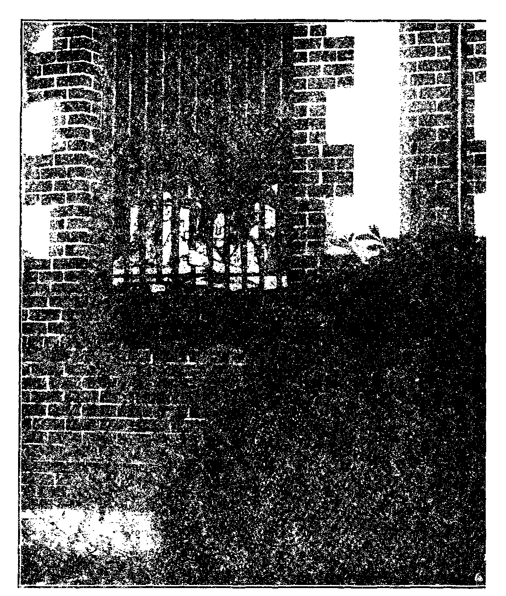
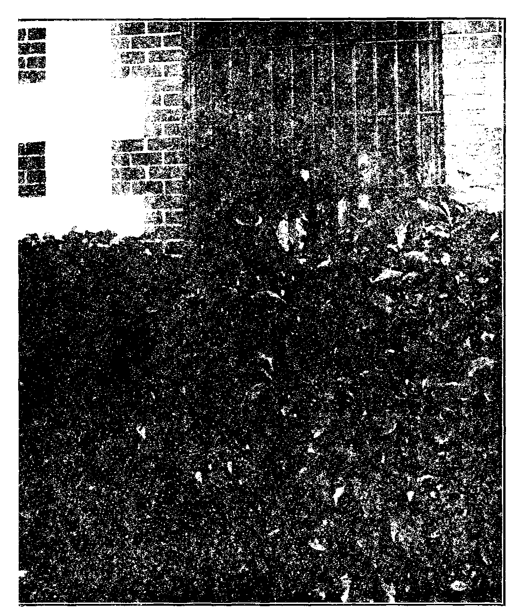

££6I ‘61 AInf
I9£’°N'AIX *I°A
Sei uSwjlo^ $ vpvwrj V JD^Op 3U0 dcfoo r> W saif
AVQ S3XQ 3M
JSipo Al9A9
iiniiiiiiiiiiiiiiiiiiiiiiiiiiiiiiiiiiiiiiiiiiiiiiiiiiiiiiiiiiiiiiiiiiiiiiiiini
NI91H IV • aiSHNIVld IV HVAOHHf DNLLIBSNI anssi sim ui
ii:iiiiiiiiii:iiiii!iiiiiiiiiiiiiiiiiiiiiiiiiiiiiiiiiiiiiiiiiiiiiiiiiiiiiiiiini
0$V uop[c>9
• • O-<G)• " . , ,,, .(D>O• •
Insulting Jehovah God
at Plainfield, N. J.....613
Evidence of Conspiracy ... . 3 ?! Elementary Principles
of Government......641
Even a Child Should Know . . 6-11-Fljnn Establishes Inquisition . 6'3 Judge De Meza’s Responsibility . 611 Sneering at Jehovah God . . . 64-6
Inquisitor in a Frenzy . . . ,
Is Perjury O.K. in Plainfield? . 6?' ’’'Forget All About Jehovah’’ . 648 De Meza Sentences a Witness . 649 Witnesses Not Present .... 650 Cruelty to the Deaf.....6.79
“Justice” by Telephone . . . 651 Judge or Prosecutor, Which? . 652 Condoning Perjury.....652
Bible Messages a Cent Each . . G.">3 Illegal (?) to Cross-Question . 641 Kindness to Polish-Americans . 655 The Inquisition (Picture) . 656, 657 Looking into De Meza’s Mind . 658 Unnamed, Absent
“Church” Accusers .... 658 Peioceution Spreads the Truth . 659
Judge Rutherford to Take a Hand 660
Insulting Jehovah God in Elgin, III.......661
Rights Will Be Insisted On . . 631
Brief of Difficulties at Elgin . . 632
Ordering Americans Out . . . C02
Press Is on Trial......652
(Elgin Courier-News “R'port")
Mayor of Elgin Tells How
Only He NVill Permit Jehovah
to Be Worshiped .... 664
Mayor Should Take Something . 031
An Honest Officer......665
“It Is the Preachers” .... 656 Instructions Come from Clergy . 666
Quite Unnecessary Discourtesy . 666
Elgin Gets Another Opportunity 666
Roosevelt Gets Pope’s Blessing . 667 The Clergy, the Strong-Arm
Squad, and the Press . . . 669
Press Supports Infamies . . . 669 Efforts to Inflame People ... 6 ’9 Attempts to Cover Up Truth . 670 Same Principles at Elgin . . . G’.O
Badly Tangled on Who Is God . . 637 Why Grieve Because Italian
Popes Were Nicknamed? . . CCS Keeping Up with the Joneses . . 670
Published exery other Wednesday by GOLDEN AGE PUBLISHING COMPANY, INC. 117 Adams Street, Drookljn, N. ¥., I . S. A. Clayton J. Woodworth President Nathan II. Knorr Vice President Robert S. Emciy Secretary and Treasiuer
FIVE CENTS A COPY
$1 a year, United States; ^1.23 to Canada and all other countries.
Noiice to Subscribers
remittances : For your own safety, remit by postal or express money order. When coin or currency is lost in the ordinary mails, there is no redress. Remittances from countries other than those named below may be made to the Brooklyn office, but only by international postal money order.
receipt of a new or renewal subscription will be acknowledged only xxhen requested. notice or expiration is sent with the journal one month before subscription expires, riease renew promptly to avoid loss of copies.
change of address: Subscribers will please notify this office of change of address at least two weeks in advance.
riBLisiiED also in Danish, Esperanto, Finnish, French, German, Japanese, Norwegian, Polish, Portuguese. Slovak, Spanish, Swedish.
Offices for Other Countries
British...............34 Craven Terrace, London, W. 2, England
Canadian............40 Irwin Avenue. Toronto 5, Ontario, Canada
Australasian.......7 Beiesford Road, Strathfield, N. S. W., Australia
South African............Boston House, Cape Town, South Africa
Ent died as second-class matter at Brooklyn, N. Y., under the Act of March 3, 1S79.
■ —. - - — — - •
Volume XIV
Brooklyn, N. Y., Wednesday, July 19, 1933
Number 361
Insulting Jehovah God at Plainfield, New Jersey
THE urgent attention of the governor and attorney general of the State of New Jersey, and also of the taxpayers of the city of Plainfield, is invited to the extraordinary conduct of Judge William G. De Meza and of his accomplices, in Summit and Plainfield, as set forth herein.
In a previous issue, now out of print, we gave our readers full details of a remarkable conspiracy hatched and carried out at Summit, New Jersey. Observe that Plainfield, with C. A. Flynn chief of police, borders Summit, with J. P. Murphy, chief of police, on its northern boundary. Flynn and Murphy work together. Is it because they belong to the same church system'?
At the Summit outrage the magistrate Judge Williams gave nine men sentences of thirty days each for being witnesses of Jehovah God, but he withheld his hand when it came to locking up a tenth worker, the mother of three small children. No such mercy attended the rulings of Judge William G. De Meza at Plainfield.
INSULTING JEHOVAH GOD AT ELGIN, ILL.
The article which begins on page 6G1 is as important as this one. The same principles are involved: (a) These witnesses were exercising their God-given right to preach the gospel; (b) the town and city, state and nation are precluded from interfering by reason of the provisions of the constitution, (c) Every man may worship God according to the dictates of his own conscience, (d) To ask permission to preach the gospel which Jehovah God has commanded shall be preached would be an insult to Jehovah God and contrary to the fundamental late of the land, (e) The people of Plainfield and Elgin should inform themselves as to whether the clergymen who are persecuting Jehovah’s witnesses and using the strong-arm squads and the magistrates to throttle religious liberty in America represent the Devil, as we are prepared to prove that they do, or represent Jehovah God. In any event, when the people have informed themselves, they must take their stand on one side or the other. Jesus was persecuted by the clergy in His day, and stated that His true followers would be persecuted in the same manner. Herein is one of many fulfilments of the prophecies which show that we arc living in the last days. Awake, all sleeping ones! Decide! Decide!
Men and women, indiscriminately, were deprived of their liberty without due process of law, were arrested without warrants and without cause, were compelled to bear witness against themselves, were convicted on the hear-sav testimony of witnesses who did not appear in court, and in some instances were denied the right to be informed of the nature and cause of the accusations against them.
' 643
They were given ten days in jail for walking on the street, or for sitting in an automobile, or for mending an automobile tire, when not a shred of evidence of
any kind was laid against them. What kind of judge is this? He is not fit to sit on a park bench, 1 e t alone the judicial bench.
S o certain was Chief Flynn that Judge De Meza would do his bidding even better than Judge Williams had done it for his friend and comrade J. P. Murphy, chief of the Summit police force, Patrick J. Kelly, clerk of the court, and others of the strongarm squad involved, that before any of the sixty-one persecuted ones at Plainfield had been tried, it had all been fixed up with the warden of the prison at Elizabeth to let out the witnesses of Jehovah that had then been twenty-four days in prison, to make room for those they intended to railroad into the place.
Here is clear evidence of a conspiracy. The rulers of Plainfield stand convicted of deliberately preparing in advance to imprison dozens of men and women before they had even appeared in court. They must have known in advance what kind of court they were coining into.
The fact is that other prisoners also were turned out of the county prison before their terms had expired, and for the same; reason. The warden can verify this, but even if he denied it, it is in the record of the prison and in the daily newspapers of the date when the release took place.
In the case of the Summit outrage, mentioned on page G43, the priest that instigated it clearly disclosed himself. The work of concealment was more cleverly done at Plainfield, but was still insufficient to accomplish its ends. For a full statement of the responsibilities of the clergy and the press, see the concluding article of this issue.
For their own safety in Armageddon, which lies just ahead, the people should inform themselves as to whether the clergymen who everywhere persecute Jehovah's witnesses represent the Devil, as Judge Rutherford insists that they do, or whether they represent Jehovah God, which as their fruits show could not be the case. In any event, the people must take their stand on the one side or the other.
Is it not a strange thing, by the way, that Judge Rutherford can plead for years with the religionists to appoint their best man, to discuss with him over the radio the question as to whether they represent the Devil or represent Jehovah God, and the only response he can get is from men like Kelly or Murphy or Flynn, who vent their spleen on his fellow witnesses of Jehovah God, the humble men and women who are convinced that it is he, and not the clergy, that has the straight of it ?
The elementary principles of government are that the divine law comes first. Next (in America) comes the United States Constitution, no provision in which would be legal or binding if out of harmony with the expressed will of God. To hold otherwise would be a monstrous indignity to the One in whose hand is the breath of every creature.
Few people understand the purpose of the constitution. It is not a declaration of the rights of the people. Their rights come from Jehovah God, and from none other.
The purpose of the constitution is to state the limitation of their rights, to which the people have agreed through their representatives.
Article IX of the constitution of the United States makes this perfectly clear, when it says, ‘‘The enumeration in the Constitution of certain rights shall not be construed to deny or disparage others retained by the people.” Those ‘’others retained by the people” are rights received from Jehovah God and have particularly to do with the relations of the people to Him.
It would be entirely illegal for any American state constitution to contain clauses antagonistic to the law of God or to the United States Const it at ion. This principle is established in Article X of the constitution, which states that ‘’the powers not delegated to the United States by the constitution, nor prohibited by it to the states, are reserved to the states respectively, or to the people”.
It would not have been necessary for the State of New Jersey to include any statement in its constitution that it is in harmony with the law of God and in harmony with the United States Constitution, and not out of harmony with either of them, and yet the founders of the state wore so jealous of their rights as worshipers of Jehovah God, and as citizens of the United States, that in their fundamental law they made the following unique provision:
No person shall be deprived of the inestimable privilege of worshiping Almighty God in a manner agreeable to the dictates of his own conscience; . . . nor shall any person be obliged to pay tithes, taxes, or other rates for . . . the maintenance of any minister or ministry, contrary to what he believes to be right, or has deliberately and voluntarily engaged to perform.—Article I, Section 3.
It goes without saying that when it comes to a municipal ordinance it must not, of course1, contain anything conflicting with either the divine law, the United States Constitution, or the constitution of the State of New Jersey.
Suppose, for instance, that in a mistaken idea of their duty the city fathers of Plainfield should pass an ordinance that all persons of other cities should keep out of Plainfield, on penalty of being shot. Such an ordinance would be void because it would be in violation of the divine law, “Thou shalt not kill,” “Whatsoever ye would that men should do to you, do ye even so to them,” and, at the very least, a thousand other statements of the divine law, every one of which appeals to the mind and heart of any person who has common sense.
But suppose that the city fathers went ahead and passed the ordinance anyway and attempted to enforce it, it would not be long before the city would be placed under martial law and its streets would be patrolled by the National Guard of the State of New Jersey, or, if necessary, by the federal troops of the United States Government. And what folly it would be for any magistrate to attempt to back up such an infamous ordinance I
That is exactly the situation which maintains in Plainfield today. The law of Jehovah God requires that the message of His kingdom as the only hope of the world must be proclaimed in Plainfield so that both the rulers and the ruled may know what to do in the great crisis which is upon them.
Recognizing that it must not interfere with the discharge of this duty, which means life or death to the persons upon whom the duty is laid as well as life or death to the rulers and the citizens of Plainfield, the United States Constitution has in its Article I (Original Amendments) not only provided that Congress shall make no law prohibiting the free exercise of religion, but in Article IN has expressly reserved such right to the people, and in Article X has prohibited the states from interfering in the exercise of those rights.
But even if the city fathers of Plainfield had intended that all persons of other cities must be arrested the moment they step foot in the city, and if we could assume that the strong-arm squad were so bigoted, so stupid and so steeped in crime that they would make the arrests without complaints, without warrants, without evidence, without witnesses and without reason, there would still be an opportunity, when the arrested persons came before the magistrate, foi' him to interpret the ordinance in harmony with the laws of God, the laws of the United States, the laws of the State of New Jersey and the laws of reason and common sense.
All of these laws were grossly violated by the magistrate, De Meza, at the trial of the 56 witnesses for truth and righteousness whose homes he broke up for ten days each in the infamous proceedings before his atrocious court.
On June 4, the day of the arrest of 31 men and 29 women, the men were herded in a runway adjoining three cells and were allowed access also to the dark and filthy basement of the city jail. The 29 women were crowded into three small cells, each of which contained one blanket. Twelve persons could sit on the beds on which these blankets were spread, but seventeen had to stand throughout the night, for there was no place for them to sit, much less to lie. The night was stifling hot. After compelling these women to stand all night, the next morning Flynn and his crowd had them all fingerprinted — rsr America.
The women whom Flynn compelled to stand all night could be plainly seen by all who passed on the public sidewalk, reminding one of the position of those confined in stocks during the Dark Ages. Many who passed by were heard to express indignation as they viewed their condition. So cruel and astounding was the treatment of these women by the police that townspeople and others waited outside the jail until two o’clock in the morning, momentarily expecting the release of the prisoners.
After midnight a business man, Charles R. Hessler, one of Jehovah’s witnesses, realizing that the inquisition had been reestablished in Plainfield, had a flashlight photograph taken of the outside of the prison, showing these women standing at the windows. We show this on pages 656-657. For taking this picture Hessler was given sixty days in jail. He was not allowed to say anything in his own defense, but after he was sentenced, and as he was being rushed out of the courtroom, he did say, loudly and emphatically, what will be very apparent to every person who shall read what follows, “This court has absolutely no regard for the rights of others, and a total disregard of the fundamental law of the state and the nation.”
Nothing could have been more contemptible than the stories of these outrages which appeared in the New York, Brooklyn and Plainfield papers. All of these papers carried prominent and extensive comment regarding the arrests, falsely describing the workers as peddlers and pamphleteers who failed and refused to take out licenses, and falsely stating that the police were “given much concern as to how to accommodate them in the limited quarters of the city jail”. No paper gave the slightest intimation of the actual condition of the prisoners, but the facts of this outrage have been broadcast all over New Jersey and large areas of adjacent states and will be broadcast all over the earth.
J udge De Meza knew that a list of the names and addresses of the 213 workers who preached the gospel in Plainfield on June 4 had been served upon the chief of police, and that this was done by them merely as an act of courtesy, not required by law. This was brought out in the trial of Minnie Barnikow, the first person whom he tried. Yet he studiously ignored this faci in the trial of every one of the 56 workers whom he sentenced to prison.
Judge De Meza, when installed in office, took a solemn oath that ‘'no person shall be compelled in any criminal case to be a witness against himself”. But in the case of Minnie Barnikow, although at the time she was arrested she was at a door where no one answered the hi ll, and the officer who arrested her did not see her hand out any printed matter, yet in the ab.--er.ee of any complaining witness he required her to testify against herself and sentenced her to ten days in prison, when as a lawyer he knew he had not the slightest right to do so.
Judge De Meza knows that Jehovah God has placed certain duties upon certain people, as was the case with the prophets and apostles and the Lord Jesus Christ, our Savior. As a professedly Christian magistrate, with the certain knowledge that Jehovah God would have at various times certain ones who would have a message from Him to the people, Judge De Meza knows full well why the rule was established that “Congress shall make no law respecting an establishment of religion or prohibiting the free exercise thereof”.
By this first conviction there is good reason to fear that he cut himself off from the favor and mercy of Jehovah God and placed himself in line for the fate of those who commit the unpardonable sin: eternal destruction, or “the second death”.—Revelation 20:14,15; 21:8; Matthew 25:41-46.
In the case of the second person tried, namely, Mrs. F. Carmichael, Judge Newcorn, the counsel for the city of Plainfield, asked her concerning her movements on the fourth day of June. She replied, with dignity, that she was preaching the gospel of God’s kingdom. This should have been sufficient.
There were in Plainfield that very day numerous clergymen who claimed to be preaching the gospel of God’s kingdom, but who in fact are actually opposed to the establishment of God’s kingdom in the earth, which Kingdom will do away with the services of all clergymen for time and for eternity. But these clergymen were not harassed nor disturbed.
Judge Newcorn, corporation counsel, would have hesitated to ask any priest or other clergyman by v. hat method he preached on June 4, for he well knows that the law grants that privilege without stipulating any set method by which religion is to be exercised. Nevertheless, he asked Mrs. Carmichael “By what method?” and she replied:
“By word of mouth and in printed form, which I not only have the right to do, but which I am commanded to do by the Word of the Most High God. Besides, the fundamental law of this state and of the nation guarantees to everybody the liberty of serving Almighty God according to the dictates of his own conscience without—”
At this point she was interrupted, and after a few more words by Judge Newcorn, Judge De Meza sneeringly remarked, “Jehovah is not commanding you to do anything.” This gratuitous piece of misinformation on his part is a statement which a wise and just man would have hesitated to make. But in any event, his opinion in the premises is immaterial. It is the judgment of Jehovah God that counts.
Evidently taking his cue from Magistrate De Meza as to how to go about it to quickly obtain conviction, Judge Newcorn, after having been twice told by the fourth defendant, Louise La Grassa, that she was preaching the good news that Jehovah's kingdom is here, finally cornered her into saying, “Those who desired to have the message of God's kingdom, 1 presented it to them.”
Judge Newcorn then inquired, “Did you have a permit to make such distribution?” And then notice her splendid reply:
“According to Isaiah 43:10-12 and Isaiah 61: 1, 2 I am duly authorized by the Most High God to do this work.”
At this point Judge De Meza, whose disrespectful references to Jehovah prove that he fears not God and regards not His Word, became angry, and the following dialogue ensued, after which Louise La Grassa calmly took her sentence of ten days in prison.
De Meza: The law prohibits murder and provides a penalty therefor. Would you consider it rifjht to violate that law?
La Grassa: I did not commit murder.
De Meza: I ask you whether you would consider it right to violate that law.
La Grassa: Most certainly not, because it is in harmony with God’s law. But does the court consider it right to violate Ilie fundamental law of the land in enforcing an ordinance that takes away my liberty of preaching the gospel?
De Meza: Our ordinance prohibits distribution of any kind of pi inted matter without obtaining a permit. Do you think that you were acting right in making a distribution without complying with the law of the city?
La Grassa: In the sight of Jehovah God, yes. I have made a covenant to do the will of God and to obey His laws. His word and law is the highest authority governing man, and superior to any law that man can make.
De Meza: (Angry) The answer is that you didn’t have a permit; you didn’t consider it necessary. Is that right?
La Grassa: “Whether it be right in the sight of God to hearken unto you more than unto God, judge ye.” This was the answer of the early disciples of Jesus when they were brought into court on a charge identical with the one before this court.
As some of our readers may not have their Bibles immediately at hand, we quote from the Scriptures the citations which Mrs. La Grassa mentioned. We are certain that not a priest or other clergyman in Plainfield would have had the right to apply these scriptures to himself or would have had the knowledge of the Scriptures necessary to make such a prompt answer and such an all-sufficient answer under the circumstance. These scriptures are as follows, and apply exactly in the connections in which they were cited.
Ye are my witnesses, saith the Lord, and my servant whom I have chosen; that ye may know and believe me, and understand that I am he: before me there was no God formed, neither shall there be after me. I, even I, am the Lord; and beside me there is no saviour. I have declared, and have saved, and I have shewed, when there was no strange god among you: therefore ye are my witnesses, saith the Lord, that I am God.—Isaiah 43:10-12.
The Spirit of the Lord God is upon me; because the Lord hath anointed me to preach good tidings unto the meek: he hath sent me to bind up the brokenhearted, to proclaim liberty to the captives, and the opening of the prison to them that are bound; to proclaim the acceptable year of the Lord, and the day of vengeance of our God; to comfort all that mourn. —Isaiah 61:1, 2.
In the case of Gladys Doughaen, the policeman who arrested her was honest enough to admit that he did not see her distributing anything. As a matter of fact, she was arrested while sitting in the front seat of her automobile. Magistrate De Meza knows perfectly well that it is not illegal to sit in an automobile, but when he was trying her for that "crime” the following dialogue ensued:
DE Meza: (In undertone) By necessity I’ll have to dismiss the complaint against her, if she promises to discontinue passing out tracts or other literature. (Louder) The law requires, madam, that before you can distribute or sell anything in Plainfield, whether it be religious books or not, you must first obtain a license.
Doughaen : I was not selling anything. It’s necessary for me—
De Meza: (Interrupts) It’s necessary that you are going to obey the laws of our city, madam. I’m giving you fair warning now. I’m not vindicative, but you’ie going to obey our law, while I am here anyway. Will you discontinue in the future if I give you another chance? Step down.
Doughaen: If we arc ordered to go into Plainfield—-
De Meza: By whom?
Doughaen: By Jehovah God.
De Meza: (Yelling) We don’t care about Jehovah or anyone else! We have our laws, and you’re going to obey them! I will set your case down for Thursday morning. (Angry) Lock her up! Such foolishness! I never saw the like of it. Let’s rush this through!
In the case of Beatrice Hanke, after she had patiently explained to Magistrate De Meza that she has a permit from Jehovah God, the highest authority, to do His work, and that ‘‘God’s law is superior to any law of man”, he interrupted her excitedly, inquiring, “Will you promise to leave this city at once and desist from passing literature and go back to your family, if I give you another chance?”
Airs. Hanke firmly replied, “Most certainly not. If I am commanded by Jehovah God—” At this point De Meza interrupted her with his usual interjection, “Ten dollars or ten days.” See the responsibility which the man has taken upon himself, of insulting Jehovah God by making it appear that anyone must ask permission to preach the gospel, which preaching He has commanded shall be done.
In the case of Rose Weber, the seventh defendant, Judge De Meza, who in all these cases did most of the talking, acted as prosecutor, judge and jury, as follows:
De Meza: Didn’t you know that the law requires that you must first get a permit from the city to make such distribution?
Weber: I am a member of the Watch Tower Bible and Tract Society, which is a corporation created and organized according to law for the express purpose of carrying on tills benevolent work by preaching tlio message of the Bible in printed form. The constitution of the United States and the constitution of New Jersey guarantee the liberty of each one to serve God and preach the gospel in his own way, and for this reason no municipality—
De Meza : Have you ever been arrested before for passing circulars in other cities? I am asking you. You’re a Christian woman, you say, and you should not hesitate to tell the truth. Have you ever been arrested before?
Weber : Yes, for preaching the gospel.
De Meza: How many times?
Weber: Does that make any difference?
De Meza: It makes a whole lot of difference to me.
Weber: I do not see how it makes any difference.
De Muza: You do not see it, huh? (Bude) Step down! I see you're one of those who will not stop. If the court will give you another chance, will you go back to your home town and desist from distributing literature—
Weber: I cannot make that promise.
De Meza: (Stein) Ten dollars or ten days.
While the eighth defendant, Dora Wadams, was being ‘‘tried", she stated three times that she was not guilty of the charge made against her. De Meza became infuriated, and an innocent spectator in the courtroom who had previously witnessed injustices in New Jersey but who had never witnessed such infamous proceedings as took place at Plainfield, was suddenly ordered to stand up. The following dialogue then occurred:
De Meza: Are you interested in this case?
Morgan: Yes, sir, I certainly am.
De Meza: What’s your name?
Morgan: Daniel E. Morgan.
De Meza: Where do you live?
Morgan: 133 Main Street, Fort Lee.
De Meza: What's your official position?
Morgan: I am :i spectator, and not on trial.
De Meza: What did you mean by your conduct?
Morgan: Haven’t I a right to smile?
De Meza: (Fierce) I will order you from the court if I see any more of such actions! I’m looking around and my eyes are open.
The trial of Mrs. Wadams then continued. Notice now the steps which De Meza took to send this innocent Christian woman to prison. Note the dignity and intelligence of her responses and the way she was bullyragged by this man who numerous times went out of his way to say (and to pronounce it just that way) that he was “not vin-dic'a-tive'’.
De Meza: (Mocking) Take the stand, madam.
Wadams: I move the court to dismiss this complaint because it does not state facts that constitute an offense or violation of the law. All the evidence fails to show any guilt—
De Meza: I think we have sufficient evidence. Did you have a permit to place your literature in the city of Plainfield?
Wadams: I was preaching the gospel and did not need a pei niit.
De Meza: (Sneering) Y’ou were preaching the gospel! I'm asking you, did you go from house to house delivering these gospel tracts?
Wadams: This gospel of the kingdom—
De Meza: Just a moment! Did you deliver this literature?
Wadams: To those who were interested.
De Meza: Did you get a permit from the city of Plainfield?
Wadams: How could the city—
De Meza: Did you get a permit?
Wadams: The constitution estops any municipality from enacting or enforcing a law that would interfere or hinder the work of preaching the gospel.
De Meza: I ask you, Did you have a permit fiont the city authorities to go from house to house with this literature?
Wadams: The city has no authority to give me a peimit to preach the gospel. I have authority from Jehovah God!
De Meza: (Vexed) Step down. Where do you live?
Wadams: My name and address is on the list filed by us with the Police Department.
In the case of the ninth defendant, Jenny Cochran, De Meza made it clear that perjury on the part of an officer of the law is unobjectionable in his court if it aids in the conviction of Christian women whose only interests in life are to honor the name of Jehovah God and bestow blessings upon their fellow men. In the following dialogue Miss Cochran shows herself a good deal more of a lawyer than De Meza.
Cochran: May I ask the officer some questions?
De Meza: You may.
Cochran: Where was I when you saw me?
Officer Gray: On the porch of Mr. Kelly’s house. Cochran: Y’ou did not see me deliver a pamphlet? Officer Gray: Yes.
Cochran: Which side of the street was I on?
Officer Gray: The south side of West 5th St.
Cochran: Y’ou mean to say that I stopped at a house on that side of the street?
Officer Gray: Yes.
Cochran: Could you take an oath on that?
Officer Gray : I have already taken an oath.
Cochran: To say the truth, but you did not. I was working on the other side of the street. I couldn’t have been on that side when I had only the other side to work on. Could I bring Mrs. Wadams as a witness, please? (After brief pause) I should like to put in my defense.
De Meza: Judge Newcorn, I can postpone this case. I can put it over until Thursday.
Cochran: Don't I have the right to put in my defense?
De Meza: If you were not working on one side of the street, you were working on the other. Will you answer the question, madam: Were you distributing literature?
Cochran: That will come out in my defense.
De Meza: All right, your defense will be ten dollars or ten days.
Cochran: Then I don’t have even a chance to make any defense?
De Meza: (Brazen) Ten dollars or ten days. Officer, take charge.
The tenth defendant, Eleanor Podgorski, is of foreign extraction, but loves Jehovah God and understands that in this land of freedom, light and liberty she may show her appreciation of what God has done for her, by going from door to door bearing a printed card which has upon it an excellent testimony regarding the necessity of God's kingdom and the importance of the literature explaining that Kingdom.
When she was placed on trial, she did not readily comprehend the questions by which Judge Newcorn and Judge De Meza sought her imprisonment. Nevertheless, she gave a splendid witness for Jehovah God in the dialogue that ensued as her tormentor on the bench revealed to her and to all what it is to be an enemy of America's best interests.
De Meza: Well, if the judge gives you another chance, will you go back and stay out of Plainfield and not give out any more papers?
Podgorski: I obey God’s law. It is higher than man’s law.
De Meza: Did you have a permit from the police to take those papers around?
Podgorski: Jesus Christ and His disciples asked never for permit to preach gospel from house to house.
De Meza: If the judge gives you another chance will you promise—
Podgorski: I obey Jehovah God.
De Meza: (Insolent) Let Jehovah go for a few minutes! Forget all about Him. If Judge De Meza gives you another chance and lets you go home, will you promise me not to come hack—■
Podgorski: I will obey Jehovah’s law. I come back if He commands, ‘ ‘ Go, and—
De Meza: Let me finish! You mean to say, if your Jehovah commands you to go ahead and distribute this literature you will do it in spite of all laws of Plainfield?
Podgorski : I must obey His command; bring His message to the people.
De Meza: All right, then the court cannot do anything else but impose a fine. I have given you and your sisters every chance and would let you all go, but you still insist that Jehovah is above you, above everyone and above the laws of the city. Ten dollars or ten days.
The eleventh case to go to trial was that of Mrs. J. Stokes. She was accused of violating the city ordinance. The following dialogue ensued prior to her sentence of imprisonment for ten days.
De Meza: Now, our city ordinance says that you, and I, and everybody else must first obtain a permit from the city before we can distribute any literatuie. That law is made to protect your and my family from impostors who go around and rob our homes. I think that’s a good law.
Stokes : It cannot apply to our w ork of preaching the gospel. I am endeavoung to do good to the people and I have not broken any law of the land.
Newcorn: If the court gives you another chance, will you promise not to distribute anv more liteiature in Plainfield without first obtaining a permit from the city authorities?
S: No worldly authority can properly prohibit the pleaching of the gospel; therefore no city could grant a permit for preaching the gospel. I have consecrated myself to do the will of God and to follow in the footsteps of Jesus who came to earth to bear witness to the truth. I am thus doing and am one of Jehovah's witnesses.
M. [Magistrate De Meza] : We know that. That has nothing to do with the issue befoie the court.
S.: Being specifically commanded by the Word of God to go and deliver to the people the message that His kingdom is here, I have no alternative. I cannot be faithful to Ged unless I obey.
M. [Magistrate—and so henceforth indicated] : (In undertone, scoffing) Cannot be faithful unless you obey!
Mrs. Stokes served her sentence of ten days in prison, and now note, tins combination of circumstances. Just as we are reviewing Her testimony this morning, in conies a letter from her showing that if you arc a Catholic you can distribute all the literature you please in Plainfield. All the police need to know is that you take your orders, not from Jehovah God or His Word, but from the little ‘'king'’ that rules at Vatican City, and it goes 100% with the department. Her letter follows:
A little incident occurred while I was lidin^ in a police car en route to headquaiters June 4 at Plainfield, N. J., which L am going to tell you about. The police car winch picked nie up contained one policeman in umtoim and two plain clod es men. After picking me up they circled around tiymg to find Jehovah’s witnesses. They pulled up to the curb quite a few times, but then drove on.
When they saw tvo ladies with circulais or punted matter over their arm, they pulled up to the cu’b, motioned to the ladies to come to the car and asked them if they were distributing printed matter. They answered, “Yes.” Then they asked them if they were connected with the Watch Tower work, and they answeied, “No.” They then asked the ladies who they were, and they replied, “We are Catholics”; when the police said, ‘‘That is all right. You can go on.”
This information may be of no \aluc, but again it muy, and 1 am submitting it that you may use it if you wish.
Can you imagine a “judge” so far gone mentally and in such a hurry to railroad somebody to prison that he forgets himself and gives a sentence of ten days imprisonment to a person who at the time was merely a witness in another case. De Meza did this in the case of the husband of the second defendant, Mrs. Carmichael. He corrected the blunder after he had made it. One would think that he would.
As a matter of fact, however, he merely postponed the blunder until such time as he should have an opportunity to wreak his vengeance upon the men of the party. Carmichael, by the way. was arrested while he was talking to a man on the porch. You didn’t know it was against the “law" to talk to a man on the porch, did you ? If you try it in Plainfield, you are liable to ten days, and if they haven’t got any law against talking to people on the porch, why, they will make one.
After breaking up ten Christian homes by sentencing ten splendid women to prison for ten days to associate with the lowest elements of society, De Meza carried over the cases of sixteen others to the next day. We give the man credit for releasing these women for one day on their own recognizance, but their names and addresses were already on file at police headquarters, and had been for two days, and De Meza could not help but see that never before in his experience had such a fine type of women been before him. In response to his questioning, they said to him, and it should have touched his heart, if he has one:
We have no alternative. We have made a covenant with Jehovah God to do His will. We prefer to obey God rather than man.
To this De Meza replied:
You have made a covenant with God and you will go according to His will? All right, you may go according to His will, but we will have the deciding vote whether you will pass this literature in the future.
Upon assuming office as a magistrate, Judge De Meza entered by oath into a solemn covenant with the citizens of this country that “no warrants shall issue but upon probable cause” and that “in all criminal prosecutions the accused shall be confronted with the witnesses against him”, yet in the case of Madeline Wagner we have the following dialogue between him and Officer King. If Officer King is a true officer of the law, why did he not have this unnamed lady present in court ?
And if Judge De Meza were a just judge, which he is not, how does it come that he would assume responsibility for what he knows perfectly well was an illegal arrest? To show his hypocrisy and the clear vision this woman had of her rights, we present a portion of the colloquy between them.
De Meza : Did you see this lady passing any literature or handbills on the fourth day of June?
Officer King: No, but we received a report from a lady that she was distributing circulars on Monroe Avenue. I had a description of her and saw her as she was walking on the street with another lady. She was carrying one of those grips. I asked her what she was doing. She said she was preaching the gospel. I asked what her name was. She said she was one of Jehovah’s witnesses and would not give her name. I asked her if she had a permit to distribute literature. She said she didn’t need one. Then I brought her in.
M.: Did you have a permit from the city of Plainfield to distribute or pass any tracts or pamphlets?
Wagner: I had no permit from the police, but I have a permit from Jehovah God.
M.: (Scoffing) A permit from Jehovah God! Where is your permit from Jehovah?
W.: It is noted in His Word. I am commanded in the Scriptures—•
M.: (Interrupts, ridiculing) Oh, you’re commanded in the Scriptures! Then you had no permit from the city?
W.: No, I do not need such a permit.
M.: (Nasty) So you do not need such a permit! Is that so?
W.: The Constitution of the United States and the Constitution of New Jersey guarantee me this freedom.
M.: That’s according to your idea. Our ideas don’t coincide.
W.: Those fundamental laws are your own laws.
M.: (Rude) Oh, step down!
Nellie Zahorie, the next Christian woman given ten days in prison, w7as very deaf, and she being unable to hear the charge against her, Magistrate De Meza asked George W. Bossier, Jr., to assist her to understand what it was all about, but when Rossier undertook to help the innocent woman to cross-examine her tormentor he ordered Rossier to take his seat right away, or he would have him locked up.
Mrs. Zahorie was walking down the street when she was arrested. You did not know that it was against the law to walk down the street, did you? This poor woman who was guilty of the offense of walking on a public street in Plainfield was so deaf that when, after she had bravely said to the judge, “Regardless of what man may or may not do, I must obey Jehovah God,” and the judge had immediately responded with his customary and savage, “Ten dollars or ten days,” she had to ask what it was that he said, and was led away to prison, in “the land of the free and the home of the brave”.
Harriet Watson of Belleville was arrested on North Front Street, Plainfield. Officer Bray, who arrested her, testified that she had walked past him and after that he had waited for her to come down from the porch of a house. You did not know before what an illegal thing it is to pass a policeman on the street, did you? It must be a dreadful thing, in the eyes of somebody, else why would the police force have such sharp eyes for these terrible malefactors that are not Catholics.
And now, if any white man or black man or red man or brown man or yellow man ever heard of worse outrage in the form of a trial than was perpetrated in the following, will he please write in and give us the facts? Miss Watson showed herself a very good lawyer. De Meza showed himself no lawyer, no judge, and no man.
Watson: I move the court to dismiss this complaint because it does not state facts that constitute a violation of the law. All the evidence fails to show any guilt—
The Golden aqe
De Meza: I think we have sufficient evidence. Were you distributing circulars in Plainfield?
AV.: Have I not the privilege of asking the court to dismiss this case?
M.: (Excited) The complaint will not be dismissed. Were you distributing circulars in Plainfield?
AV.: (Deliberate) That will be answered in due time.
M.: (Angered) AVill you answer my question now? Were you distributing circulars?
AV.: Must 1 incriminate myself? I ask the court to permit me to put in my defense.
M.: (Enraged) AVeie you distributing circulars?
AV.: I ask the court—
M.: (Furious) Step down! I will not tolerate any insolence from you! This court is trying to be courteous to you, but you don’t know your place. Ten days or ten dollars! Now you will have a chance to think over what “courtesy” means. Officer, take charge.
It seems that the farther he Avent Avith this “trial” the more unjust De Meza became. In the case of Margaret Dossier he alloAved Officer Er-ber to say that a complaint had come in over the telephone and that he had gone out and apprehended tAvo Avomen, of Avhom Mrs. Dossier Avas one. He accosted her as she came out of a house.
You didn’t know that somebody could have you arrested just by calling up on the telephone, did you? And it is so convenient if you live in Plainfield. You don’t have to come in and face the innocent person Avhom you Avish to have sleep on a hard board amid the lice and bedbugs. All you have to do is to reach for the telephone, and Avithout any further inconvenience on your part . . .
The dialogue between the inquisitor-like De Meza and Mrs. Dossier deserves publication:
De Meza : Were you passing out this literature or these Bible tracts on Sunday?
Rossiee: Must a defendant testify against herself?
M.: (Suave) Listen, Margaret, you are a Christian woman, you holier e in living up to the Bible, don’t you? Now, when you’re under oath, you’re supposed to tell the truth. Why can’t you answer the question the judge is asking you? AA’e’re not going to take any advantage of you; far from it.
R.: If we were just booksellers or distributors of commercial products and advertisements, we would be the first ones to come to you and ask for a permit. But as I am preaching the gospel and am not engaged in any commercial enterprise, it is not necessary for me to ask for a permit.
M.: It is necessary to protect the citizens from unscrupulous people coming into the city and robbing homes.
R.: That is just the reason we presented the list with our names and addresses to headquarters, informing the police that we weie here and that we came to do a Christian and benevolent work. AVe don’t work in the dark; we work in the open, and we—
M.: (Excited) Just a moment. The city ordinance does not allow anyone to discriminate. It applies to everybody.
R.: Wouldn’t that be an extreme contradiction of the constitution which guarantees everybody the freedom to serve God in any manner he chooses?
M.: (Heated) You can serve God in any way you wish, but what you were doing was passing tracts.
It.: In order that I may get this matter clearly before the court, I have written out my statement and ask permission now to read it in my own defense—
M.: Not nccessaiy, not necessary at all! Ten dollars or ten days.
R.: If you desire to punish me for doing good to the people—
M.: AA’e do not punish anybody for doing good. The judge does not want to punish you, but you violated the law. Now, if you will promise me that you will stay away from Plainfield and will not pass any more religious tracts without first obtaining a permit, I will give you another chance. AVill you promise me?
R.: I have pledged my life to the service of Jehovah God, and I cannot make a piomise not to—
M.: AVell, I have pledged my life to render decisions according to law, and must find you guilty. Ten dollars or ten days.
Notice in the next case, that of Norine Bertram, hoAA’ Judge De Meza tried to Avheedle this Christian Avoman into testifying against herself and then when she desired to put in her defense he insulted not only her and all of his hearers and the Avhole people of the United States, but even Jehovah God himself.
De Meza : AVcre you distributing tracts in the city of Plainfield on June fourth?
Bertram: Must I testify against myself! Is that customary—
M.: It’s customary when you’re under oath to answer the judge’s questions. (Suave) You’re a Christian woman. Now, answer my question: AVere you distributing literature?
B.: I was wherever the people wanted it.
M.: Did you have a permit?
B.: I was fully authorized.
M.: By the city authorities!
B.: By the authority of God’s Word.
M.: If the judge gave you another chance, if I released you today, would you promise to desist from this work and not distribute any more in this city until you obtained a permit?
B.: May I ask a question before I answer that? I’m not fully acquainted with the law concerning a legal trial, but is there not time provided that the defendants can plead their case ?
M.: Yes, but—
B.: I would like to ask the court to hear a short statement that I have written out in my own defense—
M.: Just a moment. See if I am right; I may be wrong. Your statement is that you have an absolute right to do this work here, and that the law of Jehovah is higher than the law of the state. Am I right! I believe that, and I believe that anyone who will keep God's law will also keep the law of the state and the laws—
B.: (Interrupts, emphatic) Certainly; as long as the laws of men do not conflict with the law of God!
M.: The ordinance of the city is a good law and made for the protection of the people from impostors. The police department isn’t against you because you’re Christians. Get that out of your mind! It isn’t because of your belief that you were ariested. Get that out of your head! If the president of the United States came here and took those books and pamphlets from house to house and did not have a permit from the police department, the police of Plainfield would go and bring him in just as they did you. It is to protect your home and my home and everybody’s. Now, step down.
Now, listen to Judge De Meza. If the judge is fair and gives you another chance today, and gives everyone of you a chance, and lets you go back, will you on your honor promise Judge De Meza that you will desist?
B.: Well, if Jehovah God commands that we shall go in all the world and preach the gospel of His kingdom for a witness to all nations before the end shall come, and we exclude Plainfield, New Jersey—
M.: (Interrupts) Well, it’s a very unpleasant thing for tho judge to do what he is doing; it’s a very unpleasant task. I’m certainly going to the limit with you people to help you. I think your intentions are all right, and that you are good Christian people. I wish there were more like you. But the judge does not make the laws, nor the police department. Our duty is to enforce them, and we have to perform our duty. It would be easy for you to get a permit and you would avoid all this trouble and inconvenience. Now will you promise me—
B.: I cannot. I regard it as an insult to Jehovah God to demand that wc should ask any man for a permit to do the work that the Almighty has commanded to be done. I prefer to obey God rather than man.
And now we invite the attention of lawyers and judges everywhere to something unique in the history of jurisprudence. Here in what follows we have what in some respects-we believe is one of the most remarkable trials that ever took place in this world. Judge De Meza is addressing Lieutenant Saffron of the Plainfield police, in the trial of Anna Behlau:
De Meza: Lieutenant Saffron, did you see this woman Sunday distributing literature?
Officer Saffron: I saw her on the porch of a house at— De Meza: (Interrupts) Did she have a permit?
S.: She had no permit.
Behlau: Just a moment. I would like to ask the officer a question. Just where did you approach me?
S.: On West 4th St. You were on a porch.
B.: You saw me on a porch on West 4th St.?
S.: (Uncertain) Yes.
B.: You did not.
S.: I may have this woman mixed up with another woman.
M.: Then you aren’t positive that this is the woman who was passing circulars?
S.: (Hesitant) lam—not. There were two of them picked up there.
M.: Swear the defendant.
B.: Just a moment. I would like to ask the officer a question. Wasn’t I sitting in a car when you saw me?
S.: She—was sitting in a—Hudson car.
B.: (Emphatic) Then you did not see me passing literature. M.: Do you know whether she was passing any literature? S.: She stated to me that she was.
B.: That’s not true!
M.: The city will make her bear witness. Mrs. Behlau, the city will make you its witness. Take the stand.
B.: I should like to present my statement.
M.: Swear her in! Do you swear to tell the truth, the whole truth and nothing but the truth?
B.: I do.
M.: For what purpose did you come to the city of Plainfield June fourth?
B.: To preach the gospel of God’s kingdom.
M.: Did you distribute any literature?
B.: The court has no right to ask such a question. I refuse to answer.
M.: You refuse to answer? Judge De Meza is asking you a question. Answer!
B.: May I ask if you are the judge or the prosecutor?
M.: (Infuriated) Step down! Step down! You’re very insolent. Your insolence doesn’t deserve any consideration. Ten dollars or ten days in the county jail. See how you like that!
B.: I wish to put in my defense.
M.: Take charge, officer, take charge.—You’re a very insolent person.
B.: Am I not entitled to a legal trial and to a defense? M.: Tako charge, officer. Such insolence!
B.: I appeal from the decision of this court to a higher court and ask that appeal papers be made out for me.
M.: Get a lawyer!
B.: I’m not able to hire a lawyer, but I am entitled to the protection of the law.
M.: Tell that to the higher court!
In the case of Minnie Stewart Judge De Meza not only ignored the perjury of Officer Conlin and violated the provision that “no person shall be compelled in any criminal case to be a witness against himself”, but when a lover of justice protested against his atrocious rulings he had him locked up, too, and subsequently gave him several months in prison. In the abstract of the trial which follows Conlin is the name of the perjurer, Stewart the name of the woman being tried, and Bossier is the name of the protester against injustice.
De Meza: Do you know, of your own knowledge, that this defendant was going Sunday from house to house passing circulars without a permit?
Officer Conlin: I do.
M.: Where did you see her?
C.: On West 6th Street. She had come out of a house.
M.: Distributing?
C.: Yes.
Stewart: The officer is not telling the truth.
M.: All right, question him.
S.: Officer, you have sworn on the Bible to tell the truth. If you saw me coming out of a house, as you testified, will you please tell the number of that house?
C.: The number of the house? The number of the house where I saw you?
S.: Yes, that you saw me leaving.
C.: Well—er—I saw you at several houses.
S.: Well, tell me the number.
C.: I do not know the number.
S.: Isn’t it true that you have no evidence? When you saw me I was simply walking along on the sidewalk.
M.: Will you take the stand, madam? We are in a court of justice and I don’t want any argument. Swear the defendant. Do you swear to tell the truth, the whole truth and nothing but the truth?
S.: I do.
M.: Were you handing out circulars on Sunday?
S.: I was preaching the gospel.
M.: And in doing this you were handing out Bible tracts. Is that right? Is that right?
8.: Has the officer got proof of that? There is no evidence.
M.: (Rough) Answer my question. Don’t be insolent! Please be aware that I’m taking the trouble to be courteous to you; and I expect the same courtesy from you. Were you going from house to house ringing doorbells, preaching the gospel of God’s kingdom in printed form? (After brief pause) (Vicious) I am asking you and want an answer!
8.: I was informing the people of God’s kingdom—
M.: (Interrupts) And in doing this you were passing out literature? (Mad) Answer! Did you —
Dossier: (Interiupts, walking up to bench) Say, will you lock me up! I can’t stand any more of this. (Flaming) The lady docs not have to answer that question, and you know it!
M.: Take him away! Lock him up! — Order in the court! —-Nuw, ZXIrs. Stewart, answer my question: Bid you pass out ciiculars or oilier literature?
S.: I am a true and sincere follower of Christ and have consecrated my life to do the will of God and to preach the gospel of—
M.: How did you preach it?
S.: By word of mouth, going from—
M.: (Interrupts) And by handing out literature?
S.: V/as I handing out literature?
yf.: (Angry) You’re trying to evade my questions.
S.: Is it lawful to compel me to incriminate niyscli ?
M.: Don’t argue with the judge! Did you have Bible tracts in your possession?
K: Yes.
M.: And what were you going to do with them?
S.: ((’alm and deliberate) I was preaching the gospel of Coil’s kingdom.
M.: (Furious) Stop down! I find you guilty. Ten dollars or ten days!
>S.: Is this a fair tr ial? Are we not entitled to a legal trial?
2d.: (DaMiig) If w?u add any more to it, I will add ten days more to it!—Cmirt is adjourned.
Having railroaded 25 refined Christian women to prison for ten days because they loved (fed and were obeying His commandments, Judge De Meza proceeded to do the same thing with 29 men. The first one tried was Ed Dunn. We give the colloquy which passed between this gentleman, Judge De Meza and Judge Newcorn. We commend this “trial” to the consideration of the legal fraternity in each of the 140 states and countries where The Golden Age circulates.
Dunn: Before being sworn in I wish to state that I have no quarrel with the ordinance: it’s the application of the ordmaiK.’; and before 1 can testify in all honesty in my behalf, I hate to enlighten myself—■
De Meza: The only question we want to enlighten you on is this: Our city ordinance piohibits the distribution of literature without a permit. Now, the only question this court has to deal with is the fact whether you did or did not violate this ordinance. If you did you are guilty. If you did not you’re not guilty.
Newcoc.n: Let him be swoin.
D.: 1 prefer not to be sworn in before—■
M.: (Interrupts, impassioned) The court adjudges you guilty of illegally distributing and eiiculaiizing literature, but I'd like to ask you something: If this court gives you another chance and lets you go sect-Lee, will you promise Judge Do JIeza not to come back to the city of Plainfield and distiibuto again without tiist obtaining a permit?
D.: No, sin
M.: Ten dollais or twenty days! (And then, correcting himself) Ten dollais or ten days.
In the case of Louis Schaab, Jr., it was brought out that at a certain home he had left two booklets, one in English and one in Italian, and accepted a contribution of ten cents toward the work, which contribution under any circumstances could have been but a minute fraction of the expense to which he was subjected for that day and would have been subjected to even without the ten days’ interruption to his work, which Judge De Meza’s cruelty imposed upon him.
There are four good addresses on Bible themes in the Crisis booklet, and seven in the Italian booklet, less than a cent apiece for eleven of the grandest lectures ever given. Moreover, Schaab would have been pleased to give a Bible treatise to anyone who desired one, regardless of whether such contributed to the cause or not. At length he came before the judge, when the following dialogue took place:
De ivIeza: What were you doing in Plainfield last Sunday? Schaab: Pieaching the gospel.
M,: And how were you pieaching it?
S.: By going from house to house and telling the people the good news that God’s kingdom, which is 1 lie only hope for sufi’eung humanity, has come.
M.: And in dung this were you distributing literature in violation of the city ordinance?
S.: In violation of your oidinance? No.
M.: (Angjy) Did you or did you not hand out literature?
S.: I do not caie to answer that question, because it may tend to incnminute me.
M.: (Angiy) Step down, step down!
Nev. CORK: 1 nio\e sentence.
M.: Did you ha\e a pe.imit to distribute litciature?
S.: I don’t care to answer that, because your oidinance doos not apply to our work.
hl.: Does not ajfply to your work?
K: No, it does not cover the woik of pic-aching the gospel.
M.: (Sarcastic) It does not? Is that so? Ten dollars or ten days.
In a case where a prisoner elects to conduct his own defense the magistrate on the bench is supposed, according to the ethics of the legal profession, and in the interest of the naked cause of justice itself, to take special care of the interests of those who are accused of crime, and especially would this be the duty of a magistrate if the defendant happens to be of foreign extraction.
We now invite the legal fraternity of the world to ponder the complete record of the case of Anthony Kwiatkowski as it was tried before Judge De Meza, who, when he is called to answer for this infamy at the bar of Almighty God, will have no answer to make and no place in which to hide his head.
I>r Are there two complaints against him? This 13
the siuiie, i~n't he.’
Oim'ER Bray: Both were arrested at the same time.
M.: H—m. Got the names mixed up. Anthony, do you ewear— No, swear the officer first. Officer, do you swear to tell tho truth, so help vou God?
B.: I do. “
M.: Did you see this man on Sunday distiibute circulars?
B.: Yes, your honor.
M.: Did he have a permit?
B.: No.
M.: Step down; that’s all.
Swear the defendant.
Clerk : But your hand on the Bible.
M.: Do you swear the evidence you give wherein the treasurer—
Kwiatkowski: I do not understand—
M.: Ten dollars or ten days! YTou’U understand that.
Did you know that it is against the law of Plainfield, New Jersey, to have a Bible in your possession on Sunday? Take, for instance, the following record of the “trial” of John Weber.
De Meza : Did you distribute any circulars in Plainfield on Sunday?
Weber: I did not.
M.: What were you in Plainfield for?
W.: I came here for one purpose, to preach the good news that Jehovah’s kingdom is come.
M.: And did you go from house to house?
W.: Yes, to inform the people about God’s kingdom, which is the only hope for suffering mankind.
M.: Did you hand them any circulars?
W.: I had no circulars in my possession.
M.: Did you have any literature?
W.: I don't want to be rude, but this has no bearing on tho ease.
M.: You are rude in not answering my question. This court is not here to take advantage of you, but we have laws, and these laws we must enforce.
W.: We arc obeying the laws.
M.: In your way of thinking. I'm asking you an honest question: Did you hand out any literature in the homes Sunday ? ’
W.: I will answer that, but I want to ask the court first: Does that literature also moan Bibles?
M.: (Rough) Yes, it means also Bibles.
W.: Then it is not right to distribute Bibles in Plainfield?
M.: (Enraged) .Step down, step down I
Did you have a permit to distribute tracts?
W.: Am 1 still questioned?
3.1.: You know very well that I am talking to you!
W.: I’m no longer on the witness stand.
M.: (Furious) You’re an insolent person! You’re just trying to play tag with the court; but you will find that you cannot. Ten dollars or ten days!
Almost every person is aware that the Bible upon which witnesses are sworn is a part of the equipment of the court; and it was and is a part of the equipment of Magistrate De Meza’s court, and De Meza claims to have some respect for it, as is indicated in the trial of Peter Anthes.
De Meza: Now, Peter, listen to me. (Sternly, drawn out) Did you have a permit from the city of Plainfield to distribute your tracts?
Antiies: I did not think I needed one. Our Lord Jesus did not ask for a peimit to pieach the heavenly Father’s message—
M.: The law of the city of Plainfield and every other municipality in this state and in every other state requires that you obtain a permit before you can circulate any literature, whether it be religious books or advertising matter of business men. Now, I ask you, did you have such a permit or not?
A.: I did not.
M.: Now, the judge wants to be fair with you and with your other followers as well. We aien’t here to be vindicative. We ate here to tell you that if we allowed this to exist our town would be overrun with impostors—
A.: (Interrupts) IFe are not evil-doers, but are—■
M.: Don’t interrupt me. We don’t say that you are impostors. You have a right to preach. That’s a mighty good trait. We’re glad to see some people believe the Bible and go to their churches. We wish more people would go to church. More power to you and—■
A.: (Interrupts) Why, then, do the authorities interfere—
M.: Don’t interrupt me, please. Remember, you are before Judge De Meza. We don’t wish to interfere with you or your leligious beliefs. The judge doesn’t make the law, but has to compel you and everybody else to live up to that law. Now if Judge De Meza gives you another chance will you promise me not to come here and do this again?
A.: I make no such promise.
M.: Ten dollars or ten days.
A.: May I defend myself?
M.: Yes, take an appeal to Elizabeth. [Location of prison] A.: May I say a w ord ?
M.: No, you have said enough. (Sarcastic) Let some of your brothers say something.
A.: That’s the way the Pharisees and doctors of the law railroaded our Lord; just the same way-.
M.: They did no such thing.
It will be a matter of great interest to the legal fraternity of two hemispheres to know that when a person is accused of a crime and is conducting his own defense it is illegal in Judge De Meza’s court for him to cross-question the witness who swears away his liberty. This was brought out in the trial of Ben Cohen, as follows :
De Meza : How do you plead to violating the third section of this ordinance? Guilty or not guilty?
Cohen: Not guilty.
M.: How do you spell your name?
C.: C-o-h-e-n.
M.: Officer, do you swear to tell the truth, so help you God ? Officer Gray : I do.
M.: Did you see the defendant distribute circulars?
G.: He was coming out of a house on 5th Street with circulars in his hand.
M.: Swear the defendant.
C.: Officer, when you called me to your car, what question did you ask me?
M.: Never mind, officer, don’t listen to him. Swear the defendant.
C.: Don’t I have the legal right to cross-question the witness?
M.: (Angry) Don’t ask questions. You’re out of order. I ’ll ask you one or two questions: Do you swear to tell the trulli, the whole truth and nothing but the truth?
C.: I do.
M.: (Harsh) Did you distribute circulars in the city of Plainfield? Yes or no?
C.: I tm a true and sincere follower of Jesus Christ, who is the Son of Jehovah God, and—
M.: (Interrupts) I don’t care who you are!
C.: I have consecrated myself to do the will of God and to follow—
M.: Ten dollars or ten days!
We invite the attention of the attorney general of the State of New Jersey to the following faithful account of the trial of Frank Decker. The total evidence upon which he was convicted and rushed off to prison for ten days is that he was seen on a street in Plainfield.
Not a particle of evidence was adduced that he was doing anything at all. It is not even stated that he was wearing out the pavements by walking on them, yet he was robbed of his employment, and his wife and children were robbed of his companionship and support, and he was imprisoned at public expense for ten days on the following “evidence”:
Be Meza: You’re charged with distributing Bible tracts and other documents without permit. How do you plead?
Decker : Not guilty.
M.: Do you swear— No, swear the officer. Officer, do you swear to tell the truth?
Officer Bray: I do.
M.: Did you see this man distributing tracts around the city on Sunday?
B.: I saw him with two other Jehovah men on Central Avenue.
M.: That’s all.— Swear the defendant.— Do you swear to tell the truth, so help you God?
D.: I do.
M.: Were you distributing literature last Sunday?
D.: (Silent)
M.: Yes or no?
D.: (Silent)
JI.: Are you a Christian?
D.: I am.
M.: You are a Christian and refuse to answer an honest question?
D.: I request the court for the privilege of making a full statement of what I was doing.
M.: (Cold) Ten dollars or ten days. You can make that statement in a higher court if you want to.
It occasionally happened that Judge De Meza in a single trial dishonored both Jehovah God and the constitution of the United States, in the trial of a single individual. He did this in the case of Robert Derrickson, as the following excerpt of the proceedings shows.
De Meza: Did you or did you not distribute Bible tracts or religious circulars on Sunday to any Plainfield people in their homes?
Derrickson : Not in violation of the city ordinance, which cannot apply to our work.
M.: Will you please answer my question, young man. I have not said a word about city ordinance. Answer my question as I, Judge De Meza, interrogate you.
D.: I came to Plainfield for the purpose of preaching the gospel of God’s kingdom and not—
M.: Please don’t try to evade my question. You’re an intelligent man; answer my question! Did you preach the gospel by distributing Bible tracts on Sunday?
D. (Emphatic) I did.
M.: Did you have a permit to do that?
D.: I was fully authorized to do the work I was doing.
JI.: By the city of Plainfield?
D.: No, by the Creator of the universe, Jehovah God.
M.: (Snceiing) And Jehovah, the Creator of the universe told you you didn’t need a permit?
D.: Yes, in His Word. I should be glad to give you some reasons for that.
M.: No, I don’t care. There is no reason for that.
D.: Besides, the constitution of the United States and the constitution of New Jersey prohibit the enactment and enforcement of any law—
M.: Step down!
D.: (Continues) that would abridge the liberty of a follower of Christ in preaching the gospel, and for this reason—
M.: Step down, step down! The judge did not frame the Constitution. Ten dollars or ten days.
In America great efforts are made to transform into true Americans people who come here from other lands. As a magistrate Judge De Meza has the following record against him in the case of Peter Blasiak.
De Meza: You are charged with distributing circulars without a permit. How do you plead?
Blasiak: Not guilty.
M.: Officer Stopinski. Do you swear to tell the truth, etc.? Officer Stopinski: I do.
M.: Did you see this man on Sunday distributing circulars?
S.: Yes, I did. I saw him coming out of a house on 4th Street.
M.: Any questions, Mr. Blasiak?
B.: Can I speak to the officer in Polish?
M.: Yes, I will let you. Ask him, Joe, if he will promise the judge not to come here any more to distribute without a permit. If he docs, I’ll let him go.
8.: Panie Blasiak, s^dzia chce wiedziec czy p. przyohie-cuje wigeej tu nie przychodzic z rozrzutkami bez pozwole-nia, jezeli tak, to moze p. bye uwolniony?
B.: Gdy organizaeja Jehowy tu nie b?dzie to i ja wiqcej tu nie przyjde.
M.: What did he say, Joe?
S.: He says, when the Jehovah’s organization will not be any more, he will not come any more.
M.: What’s that ?
S.: He says, when Jehovah’s organization disbands he will not come here any more.
M.: (Forced laughter) That’s pretty good; that’s pretty good. Ten dollars or ten days.
We invite the attention of the governor of New Jersey to the following record, which shows that it is illegal in the State of New Jersey and in the city of Plainfield to fix the tire of an automobile. Not only does it appear from the record that all that Paul Behlau did was to fix the tire of his car, but after he had been sentenced and had been pushed out of the courtroom another
THE INQUISITION, in 1933, at Plainfield, New Jersey. This scene, photographed by flashlight about midnight of Sunday-Monday, June 4-5, shows some of the twenty-nine refined and godly mothers, wives and daughters, Jehovah's witnesses, whom Chief of Police Flynn crowded into three cells, wherein but twelve could sit. Seventeen
were compelled to lie on bare concrete, or else to stand all night, at windows adjacent to a main street, a public gazingstoek. In the morning one of the creatures of Flynn's department approached the women's cells and sneeringly asked, “How did you enjoy your night's rest?”
defendant, David Robbins, at his own peril protested to the court that Behlau had been locked np without any justice. He swore that Behlau had a bursted tire and had been fixing it without a permit when he was arrested and that he did not hand out one paper on Sunday June 4.
Shamefacedly, after this protest, De Meza called Behlau back into the courtroom and gave him his liberty. Nevertheless, here is the full record of the ‘"testimony” upon which he original y sentenced this man to ten days in prison.
Ue Meza: You're charged with illegal distribution of circl'd <rs in violation of city ordinance. How do you plead?
: ;eulau: Not guilty.
M.: Swear the officer. — Do ou swear to tell the truth, so help you Cod?
OFi'iC'.Uft Bray: I do.
M.: Did you see this man last Sundry?
B.: V.’e got a call from Air. London over here, that there was a woman at his house passing out religious tracts on 4th S reet. Then I saw this man fixin’ a the of his car. The woman v.as in the car, and another man was in back.
M.: Did you ask him if he had a permit?
B.: He could only show me a permit from the Watch Tower 1'iiile & Tract Society.
? i.: But not from the Plainfield authorities ?
B.: No.
Ai.: That’s all. — Swear the defendant.
B.: (Loud) If it please the court, I move the court to dis-n this complaint—
M.: (Interrupts) Do you care to be sworn?
B.: (Keeps right on, louder) for the reason that it does n ‘ stale facts that constitute an offense—
(Incensed) Ten days or ten dollars!
B.: (Keeps right on, louder) or violation of the law.
M.: (Infuriated) Lock him up!
As affording an insight into the operation of Judge De Meza’s mind, we give the following colloquy which took place between him and David Robbins, before he gave Robbins the customary ten days in prison. Robbins had just said that he placed God’s Word and law above man’s. The excerpt follows:
Db Meza: Now, listen, that may be very true—-
Bobbins: It is true.
M.: Every man has a right to believe as lie wants to; but if we didn’t have laws to suppress criminals from going around the country committing depredations, we wouldn’t get anywhere. You’re a man of intelligence. This court does not interfere with your rights; far from me to do that. It is not the intent of this ordinance to hinder you in any Christian work or practice. Get that out of—
R.: (Interrupts) If so, then the ordinance is grossly misapplied.
M.: Wait a minute. Don’t interrupt me. This ordinance has been passed to protect your home and mine from impostors by enabling the police to keep tab on everyone that is around this town. Now, I say to you without fear or favor, if you will promise not to distribute any more literature without first getting a permit from the proper authorities, I will let you go scot-free. Will you or will you not?
R.: Scot-free. Well, it is the truth that is going to make tire people free. The people have a right to know the truth, and no one is going to stop the world-wide proclamation of the truth.
M.: Don’t answer the question that way. We do not want to suppress the truth. You’re an intelligent man, and the court would like to thresh it out with you; it is not a question of your going around and preaching the gospel. I wish more would go around and preach the gospel, but there is such a thing as going about in the right way. Probably all of you are good people, and your principles are good; but you ’re going too far when you refuse to take out a permit. Now, if you as respectable people would come to the police department and say: I am a Christian and have Christian literature that I would like to put in the homes of the good people of Plainfield, the police would have asked your name and where you are from, and the chances are that you would get a permit. Why, there is not a man in the city who would have refused you a permit. Now, that’s fair, isn’t it? Now, you’re a Christian—
R.: If the court will bear with me, I should like to ask if the court ever saw an organization with criminal intent go to the police department and put in a list of the names and addresses of all those who come to do their work in the city. Why is the fact that we presented the chief of police Sunday morning with such a list persistently denied?
M.: Well, you people come here and— and take it upon yourselves. I was in police headquarters myself Sunday morning. I just happened to be there when one of your leaders came and in a very insolent way said he would not take out a permit, that he would go ahead and did not care about our ordinance. I think you’re wholly wrong and your friends are absolutely wrong in taking the stand you ’re doing, circularizing the city without letting the authorities know who you are.
R.: I ask again, didn't we present—
M.: Listen to Judge De Meza! I am going to give you a chance: Are you going to desist if I let you go? Now, Mr. Robbins, will you promise me that if I give you another chance today you will go back home and not give out any more of this literature without first getting a permit?
R.: I am very sorry, I cannot do it. (Emphatic) I cannot compromise.
M.: You’re a very foolish man. Ten dollars or ten days.
R.: Christ said, ‘Who is not for me is against me,’ and, “If they persecuted me, they will also persecute you. ’ ’ As it was in Pharaoh’s day—
M.: We ’re not going to have religion preached here in the courtroom.
You will be interested to know that unnamed people “at the church” who do not face those whom they accuse, as required by law, can have you arrested and imprisoned if you visit the city of Plainfield and for any reason whatever go to anybody’s house. The following is a record of the trial of Otto Sturm. We invite the attention of the Department of Justice at Washington, D.C., to this flagrant outrage, this travesty against even common decency.
De Meza: You are charged with illegal distribution of Bible tracts. How do you plead?
Sturm: Not guilty.
M.: Officer King! Swear the officer. — Do you swear to tell the truth, so help you God?
Officer King: 1 do.
M.: Did you see this man lust Sunday?
K.: Yes. When 1 first saw him he was coming out of a dooryard. I asked him what he was doing, and he said he was preaching the gospel. He had no peimit and refused to give lus name.
JI.: .Refused to give his name! Did he have a permit!
K.: No; he said he didn't need one.
JI.: Did he pass any tracts!
K.: (Little voice) I didn’t see any of that. But we got a complaint— from people— at the church.
JI.: He admitted to you that he was circularizing the city! K.: Yes.
M.: Swear the defendant. — Do you swear, etc.!
S.: I do.
JI.: What were you doing in Plainfield ?
S.: Preaching the gospel.
JI.: And in doing this you were passing out tracts or circulars?
S.: I did not.
JI.: Did you go from house to house in Plainfield! (Pause) Non, answer my question; be honest with me. The court docs not want to appear in a vindicative mood or spirit. I ask you, Did you go in any homes and pass these circulars!
S.: No, I did not. I had no chance to put any out.
M.: Not one?
S.: Not one.
JI.: What did you go to the houses for!
S.: To inform the people that God’s kingdom is come.
JI.: And what did you hand the people!
S.: Nothing.
JI.: Nothing?
S.: Nothing, because nobody came to the door. The folks vveie not at home.
M.: Will you promise to get a permit before coming here again for that purpose, if I give you another chance?
>S.: No.
JI.: You will not?
S.: Certainly not. I have made a covenant with Jehovah God to do His will.
JI.: And you are going to go by the dictates of Jehovah; is that it?
S.: Yes, by His grace.
JI.: Ten dollars or ten days.
We also invite the attention of the United States Department of Justice to the following account of the trial of I. L. Conover, who, it seems, committed the terrible crime of sitting on a curb in the city of Plainfield. They will be interested to know of this wonderful judge who could break up the business and break up the homes of 56 men and women by this kind of exhibition of injustice.
De JIeza: You’re charged with illegal distribution of tracts, etc. without a permit first having been obtained. How do you plead ?
Conover: Not guilty.
JI.: Officer King. — Do you swear to tell the truth, etc. ?
Officer King: I do.
JI.: Did you see this young man distributing anything last Sunday?
K.: On complaint of JIr. Scott I was sent up there. I found this man up on West 7th Street. He admitted he was preaching from door to door and giving out circulars.
JI.: And giving out circulars.
C.: I want to ask the officer a question. (Brief pause) Officer, what was I doing when you accosted me?
K.: Sitting on a curb.
C.: Sitting where?
K.: On a curb.
C.: That's right. — What did I Bay to you!
JI.: Don't ansv. er that.
C.: Was I distributing pamphlets from door to door!
K.: You admitted that.
C.: (Emphatic) That’s not true! As I explained to you— JI.: (Interrupts) Never mind any explanation. Do you care to be sworn?
C.: I do not desire to be tried by a court guilty of such outrageous malfeasance of office.
JI.: (Furious) Ten dollars or ten days!
C.: You will have to take full responsibility before Jehovah God.
JI.: I will assume all responsibility. Take him out!
We also invite the attention of the United ►States Department of Justice to the following trial of Gustav Pedersen. They will be interested to know that it is against the law in Plainfield, New Jersey, to walk upon the street in the open air. This is a terrible offense, isn’t it?
De JIeza: You are charged with distribution of literature from house to house without a legal permit. How do you plead ?
Pedersen: Not guilty.
JI.: Officer King. — Do you swear to tell the truth, so help you God?
Officer King: I do.
JI.: All right, tell your story, officer.
K.: This man was stopped at West 7th Street. We asked him what he was doing and he said he was distributing circulars from house to house. He said he didn’t need a permit, and he refused to give his name. He said he was one of Jehovah’s witnesses.
JI.: That’s all. Swear the defendant.
P.: Jlay I ask him a question?
JI.: What question? Just one question!
P.: Officer, isn’t it true that you saw me just walking on the street, that you saw no pamphlet in my hand and nothing of the kind on me? I was just walking out in the open air when you placed me under arrest. Is that true or is it not!
K.: I arrested you after you refused to give your name and after you admitted that you had no license to go from house to house.
P.: (Indignant) Isn’t it the truth that you never asked me that question?
K.: (Brazen) It is not.
JI.: Swear the defendant. — Do you swear, etc.?
P.: I do.
JI.: Were you going last Sunday into homes in Plainfield delivering Bible tracts?
P.: If it please the court, I move—
JI.: (Interrupts, overbearing) It does not please the court at all. Will you answer my question!
P.: I did not violate any law of the land.
JI.: Answer my question. Do not try to evade. If you disagree with the Constitution and the laws of this state it’s unfortunate that you should do that as a Christian man. If you arc a Christian you will not hedge; you will tell the truth. Answer my question!
P.: I have wiitten out my statement in my defense and ask the court to hear the reading—
JI.: (Ruthless) Ten dollars or ten clays!
P.: I want to remind the court that it is a terrible thing to fall into the hands of the living God.
JI.: That’s your belief. Lock him up I
While it is inconvenient and unpleasant for clean, neat men and women to exchange the comforts of a refined Christian home for the discomforts and inexcusable filth and dirt of prison life, yet the angels of God would gladly leave their places in heavenly courts for the privilege of thus bearing testimony to the honor of Jehovah's name.
The way it works out is that over the radio and by the printed page the full proceedings of such infamies as occurred at Plainfield are made known to all. Thus the Plainfield trials were dramatized and widely broadcast. At the conclusion of the broadcast the following words of explanation and warning wore included for the benefit of those who have ears to hear.
. . . Satan, the chief enemy of Jehovah, is the oppressor of the people. He it is who has taught hypocrisy, \ iolenee and false courtesy. His sons, the clergy, have served him well in teaching the kings and lesser political rulers throughout ‘‘Christendom’’ that their authority proceeds from God, that they rule ‘‘by divine rieht” and therefore must be recognized and obeyed by the people. That false teaching belongs to the Dark Ages. Like the clergy, it is out of date.
hr these last days of the frantic effort of Satan and his representatives to hold together Iris tottering structure of “Christendom'’, the clergy, both Protestant and Catholic, are entirely unable to keep the people in ignorance of God’s word of truth. Being also unable to withstand the clear and forceful speech of Jehovah’s witnesses, the clergy now call into action a crowd of hirelings, men without conscience, who for their own daily bread are willing to persecute, arrest and cruelly oppress God-fearing men and women who chcow to obey God's commandments. Such oppressors include police offers, magistrates, jail wardens and executives of municipalities who do the bidding of their master. These do the bidding of Satan because they are hirelings. They are the “strong-arm squad” of ,’ne visible part of Satan's organization.
By their In poeritical action in thus seeking to hinder and prevent the free flow of the message of God’s kingdom, these enemies are identifying themselves for slaughter by the invisible army of Jehovah, which will strike when He gives the word, that men in all the world may know that He whose name alone is JEHOVAH is the Most High over all the earth.
Jehovah's witnesses delight to go straight on in performing the work entrusted to them by the true and living- God, to make known among the people Jehovah’s purpose to have His King, Christ Jesus, utterly destroy all who stubbornly refuse to obey the law of His Kingdom. But before God's vengeance is executed Jehovah has commanded and commissioned His witnesses to serve notice upon the enemy concerning the day of impending destruction.
In the Second Psalm the mercy of the Most High God is magnified in these words of His counsel:
‘Be wise now, therefore, O ye rulers; bo instructed, yo judges of the earth. Serve Jehovah with fear, and rejoice with trembling. Kiss his Son, lost lie be angry, and ye BEK-ISII from the way, when his wrath is kindled but a little. Blessed are all they that put their trust in him.’
Again, you people of Plainfield who hear this broadcast, Do you stand on the side of Jehovah, the God of justice and truth, or on the side of Satan, the father of the clergy and the master of their cruel hirelings?
You now know what has taken place in your city. Knowledge brings responsibility. Kesponsibiliti/ for these outrages and for the further detention of that innocent man who has been locked up for five months because he dared to raise his voice in protest against such wickedness, such responsibility must be shared by you people of the city of Plainfield who are in sympathy with and approve the conduct of that unjust judge. For that responsibility you must answer in due time, not to any creature, but to the righteous Judge, Jehovah, who has seen and heard these things.
Jehovah’s King, Christ Jesus, when upon earth nineteen centuries ago, said: ‘Shall not God avenge his own? I tell you that HE will avenge them.’ Jehovah will do that soon for His own honor's sake.
Iff THE Lord's providence, Judge Rutherford v, as busy witli his work in Europe at the time those Plainfield and Elgin matters came to a head. Had lie been here he would have been most happy to personally supervise a situation which is bound to be corrected.
However, full reports of these things have gone to him, and we now have pleasure in saying that on his return he will deliver an address at Plainfield, New Jersey, setting forth to the citizens the real cause for these persecutions and why every honest person now has a keen interest in them.
The people are at last in the place where they must decide between the clergy and the Devil on one side and the truth and Jehovah God on the other. Whichever way they decide will have a profound effect on their eternal destinies. Hypocrisy must go; all of it.
WE CONCEDE that it is all true, as The Elgin Association of Commerce contends, that Elgin is a garden spot, that it is a city of friendly people, and that it is exceptionally located for business purposes.
How regrettable that such a fine city should have fallen under the control of men that do not hesitate to insult Jehovah, the true and living God. Its police officials, many of them, acknowledge that in the management of the city there exists a clandestine union of church and state, a reprehensible and repugnant thing. They are expected to do things they know are illegal.
No attempts to put over a rule by the clergy will go in these United States. Every time it has been tried it has met with miserable failure, as witness the Prohibition fiasco. And every time it will be tried it will meet with failure, as it should. America is not Russia, nor Germany, nor Italy. There are Americans in this country still, and will be for some time yet.
Let those who insist that the only right way to worship Jehovah God is to sit under a steeple, while the person of their choice talks to them as they wish to be talked to, go ahead and worship in that way. That is their right. And that is just as far as their rights go, or will go.
Jesus Christ, the Son of God, never built a church building, never asked anybody else to build one, and never asked anybody to go to one that somebody else built, but He did teach the people, by the seaside, on the mountain top, in the wilderness, and in private homes. He exercised His rights.
Today if He came suddenly to Elgin an attempt would be made to deprive Him of these rights. He would be told by representatives of the clergy that He must build a church and teach from beneath a steeple or He could not teach at all. No law would be cited; none is possible. Such rejection of His message, with possible imprisonment of His person, would be the grossest of insults to Jehovah, the true and living God, and would bring down upon those responsible for it, and upon the city as a whole, the wrath of the One who holds us all in the hollow of His hand.
There need be no confusion on this subject. Do the intelligent people of Elgin wish to see in their city a duplication of the outrages perpetrated in Plainfield, N. J., so graphically portrayed in the pages which precede ? We do not believe that Elgin has a chief of police that would be willing to make seventeen Christian women stand up all night in three prison cells, because there was room for but twelve of the twenty-nine to sit down, but it is moving in that direction.
And certainly we do not believe that Elgin has a magistrate that could or would conduct such “trials” as De Meza conducted so shamelessly at Plainfield; but if such must come, then be assured that all attempts to do it in a corner will be in vain, and usurpations of authority will be exposed.
At Washington, D.C., April 15-16, every person in the city, including President Roosevelt, was approached with this all-important message of God’s kingdom, the hope of the world, and not a person in the city made the slightest objection. And why should they?
How does it come that Jehovah’s witnesses can witness to President Roosevelt and all official and private Washington and be treated with courtesy, and when they come to Elgin or to Plainfield they are treated as they have been ? Who is the colored gentleman in the woodpile?
This is not the fault of the people of either city. It is borne out abundantly by the thousands that received the books and booklets of the Kingdom and made some slight contributions in part payment of the expense involved. We have the records; the people themselves are with us.
And it is not the civic officials that of themselves care a particle. The only reason why they have shown this indecent activity in trying to suppress what they cannot suppress is that they have been egged on by the priests and preachers, who, astutely, do their best to keep out of sight.
The clergy are actually trying to make it seem to the people that though they have 213 sects they are really all one, and that, in any event, before anybody can teach the Scriptures they must come to them, through the custodians of the law, and obtain their consent before they can go ahead with their work. Nix on that kind of liberty.
Give everybody a fair deal everywhere.
At our urgent, repeated request Eugene Or-rell, who served with high honors at the front throughout the World War, but is now enlisted in the service of the King of kings, and is directing the work of Jehovah’s witnesses in the Elgin territory, gave us the following digest of events in that city which makes this publication necessary at this time:
On February 5, 1933, a number of good-willed and order-loving people, known as Jehovah’s witnesses, made a friendly visit to the city of Elgin, Illinois, in order to preach the good news of the early establishment of Jehovah's righteous government upon the earth and the complete destruction of Satan’s wicked organization: this in order that the people of Elgin, Illinois, might know the name of Jehovah and receive His preservation in the crisis in which the peoples of earth are now living.
Desiring to do this work in an orderly manner and tliat the civil authorities might understand the good reasons for the witnesses of Jehovah visiting the homes in the city of Elgin, Illinois, A. L. Seeley (spokesman) and another witness of the Chicago area were delegated to call upon the chief of police of Elgin. Not only did they acquaint the authorities with the nature of the work, but also presented to them the names of the visiting witnesses that they might be readily identified not as criminals or law-breakers but as representatives of Jehovah, the Righteous God. A. L. Seeley makes the following report of the visit:
“At the time of the campaign at Elgin, Illinois, on February 5, 1933, another witness and I were chosen to present the list of names at the police department for their information. As the chief was absent from his office the presentation was made to the lieutenant, who received it and took it into the chief’s office. During the conversation at that time the lieutenant asked why we did not make arrangements in advance, to which the reply was made that we did not think it necessary, as we were preaching the gospel of God’s kingdom on earth, and that we were not only within our rights to do so but were commanded so to do. This visit was short and I returned to the contact point.
“Later in the day word was received that several of Jehovah’s witnesses had been taken in by the police and I was sent to ascertain from what part of the city of Elgin they had been taken. While on this errand the lieutenant of the Elgin police called me into his office and accused us of soliciting money. This was denied by me and I reiterated that we were preaching the gospel of the kingdom of Jehovah God; that Jehovah’s law is superior to any law that man can make, and that Jehovah having commanded that this work be done it must therefore be done.
“About that time the lieutenant told me to take the crowd and get out of town. I told the lieutenant that we are not criminals and that wc are citizens of the United States. This implied, of course, our refusal to accede to his command. I then left his office to do some telephoning and when I returned to the lieutenant ’s office the workers whom I had heard were taken in had all left the police station.
“The apprehension of Jehovah’s witnesses in Elgin took place in the face of the plain statement made to the authorities of the city of the nature of their mission; which statement follows. In no point does this statement give grounds for hostility on the part of officials.
May it please you to take note that the persons whose names and addresses appear upon this paper are engaged regularly in preaching the gospel of Jehovah’s kingdom in obedience to the command of Jehovah in order that the people might be informed of the meaning of the world’s present unhappy condition and what the immediate future holds.
We have come to the city of Elgin, Illinois, for thus preaching the gospel by going from house to house and exhibiting to the people the message of Jehovah’s kingdom in printed form. This is done in order to enable the people to inform themselves with the least possible trouble and expense.
Our work is entirely charitable and benevolent and is done solely because of our love for God and His kingdom, and not for pecuniary profit. This privilege of thus preaching the gospel of Jehovah’s kingdom without hindrance or interference is guaranteed to us by the fundamental law of the United States and by the State of Illinois, in which the above-mentioned city is located.
That you may briefly ascertain the nature of our message, we attach hereto a copy of a booklet, THE KINGDOM, THE HOPE OF THE WORLD.
Knowing that you appreciate your duty of protecting people from the assaults of others, we request that the police power of this community see to it that we are permitted to carry on our life work of thus preaching the gospel without interference from any opposers or anyone else.
We and each of us are the duly accredited representatives of the Watch Tower Bible and Tract Society, of 117 Adams Street, Brooklyn, N. ¥., which is incorporated for the following puipose:
‘ The purpose for which the corporation is formed is, the dissemination of Bible truths in various languages by means of the publication of tracts, pamphlets, papers and other religious documents, and by the use of all other lawful means which its Board of Directors, duly constituted, shall deem expedient for the furtherance of the purpose stated. ’ ’ ’
In this Judgment Day the press is on trial, as well as every other institution of man. It has rare opportunities and rare responsibilities. Occasionally there is a newspaper editor who loves the institutions of his country and tries to uphold what is right. Due honor to such. Sometimes the reports are ignoble and unjust, and grossly unfair in headlines and inferences, as in the following in the Elgin Courier-News of February 6, 1933:
ARMY OF SOLICITORS IS OUSTED AFTER CLASH WITH AUTHORITIES
Group Fails to Obtain City Permit
A group of workers who claimed they were preaching the gospel of Jehovah’s Kingdom atormed into Elgin yesterday morning to make a house-to-house distribution of religious pamphlets and solicit donations for their cause but they stormed out just as readily after an encounter with city officials.
Several of the workers, said to have numbered 280 men and women, made the error of calling on friends of Mayor Myron M. Lehman and at the home of Joseph G. Huber, cily marshal.
The leader of the group, E. L. Seeley, giving his address as 5944 Eberhart avenue, Chicago, appeared at police headquarters yesterday morning and presented a list of the 280 workers to police with the announcement that they were going to distribute religious literature in the city during the day.
FAILED TO OBTAIN PERMIT
Seeley conferred with Detective Sergeant Frank Egner who advised him that he first must get a permit from the mayor or city marshal. Seeley said that he had fulfilled his mission when he presented the list of workers to police but he was advised that the group would not be permitted to operate without a permit.
Shortly afterwards, police began to get calls from all parts of the city. The workers were making a house-to-house canvass, presenting the resident with a booklet called “The Kingdom, The Hope of the World” and then soliciting donations for their work.
Mayor Lehman received several complaints at his home and he asked police to bring the solicitors in for further investigation. Marshal Huber was at his home when he was advised of the work of the solicitors and he issued orders to have them placed under arrest.
CALLS AT HUBER’S HOME
Shortly after Marshal Huber had talked to headquarters, one of the solicitors called at his home and was admitted.
“I am a disciple of Jehovah’s and am distributing these pamphlets in Elgin," the solicitor advised the marshal.
“O. K., you have fulfilled your mission,” Marshal Hubei’ replied as he removed several of the pamphlets from the solicitor’s hands.
The solicitor then started his plea for a donation and Marshal Huber listened. He then advised the man that he was a policeman and that he would have to go to headquarters.
“You can’t arrest me and take me to the police station,” the solicitor argued, “Jehovah sent me to Elgin to preach the gospel.”
“Jehovah may have sent you here but Huber is going to send you out of the city,” the marshal replied as he bundled the man into his car and took him to headquarters.
ORDERED FROM CITY
In the meantime, Lieutenant L. P. Robinson and Detective Sergeant Charles Struckman and Frank Egner had rounded up 30 more solicitors, including the leader, Seeley. After considerable questioning, Seeley was ordered to get his crew together and get out of Elgin.
Mayor Lehman this morning stated that persons desiring to distribute articles or pamphlets in Elgin must first obtain a permit from the city officials.
“Distribution of materials, literature, and advertising matter cannot be done in Elgin without the proper permit,” the mayor said.
“The housewife should ask such persons to display the permit, and if they haven’t one, they are not obliged to listen to the agent’s story, but may, if they choose, slam the door in his face.”
The workers upon this occasion, who numbered about 280 men and women, are reported in the foregoing to have “stormed” into Elgin, while as a matter of fact the sixty-five cars which carried these people proceeded in an orderly manner to Elgin from a general assembly point which was outside of the city of Elgin, each car going to a definite territory which had been previously assigned to it. Upon reaching the territories Jehovah’s witnesses proceeded in a quiet and orderly manner to make a friendly and courteous call upon the people of Elgin for the purpose above stated.
It is hard to see how they made an “error” in calling upon Mayor Lehman’s friends or City Marshal Huber in view of the fact that they had delegated one of their number to call upon the authorities. It is only criminals that make the mistake of coming in contact with the authorities or their friends.
Seeley did not obtain a permit from the authorities of Elgin in order that they might obey the law of Jehovah God. It is hardly consistent that one creature could grant a permit to another creature to obey the law of the Creator. In the past when praying “Thy will be done” Jehovah’s witnesses have always addressed Jehovah, and not Marshal Huber. Manifestly Seeley would not ask for a permit.
The booklet called The Kingdom, The Hope of the World, does present the only hope of the world of mankind because of the fact that it does not present any man’s opinion, or any clergyman’s opinion, but does present Jehovah’s purposes as set forth in the Bible.
To solicit is to earnestly ask for or request. The Watch Tower has sponsored several hundred radio lectures each week, and to date no request for money has been made. The Watch Tower merely suggests that if one is interested enough to contribute, it is evidence that he will read a book or booklet, and he is therefore given some of the literature. The Scriptures state, “Honor the Lord with thy substance.” Would the Elgin authorities have all the Bibles in Elgin burned because the Lord has solicited the substance of the people?
The statement that ‘Jehovah [who is the true and living God] may have sent you here but Huber is going to send you out of the city ’ was arrogant.
In the last paragraph of the Courier-News report the officials of Elgin invite the housewives to disorderly conduct, when as a matter of fact the influence of authorities should be toward that of tranquillity and peace.
On May 21, 1933, a second visit was made by Jehovah’s witnesses to the people of Elgin to again bring to their attention the name and good purposes of Jehovah. On this occasion the workers during the course of the day numbered about three hundred sixty and the cars seventy-four anil they again proceeded in an orderly manner from a contact point to definite territories in the city of Elgin. In order to again acquaint the authorities with the nature of the work and present the names of the workers, E. 1). Orrell, G. Y. McCormick and A. L. Seeley called at the police headquarters. The following, which took place during the course of the day between the above and the authorized representatives of the people of Elgin, will be of interest :
SCENE ONE
JW.—One of the three above-named Jehovah’s witnesses. CP.—Chief of police of Elgin, Illinois.
M.—Mayor of Elgin, Illinois.
JW. Jehovah, the true and living God, has a message for all people. As representatives of an assembly of Jehovah’s witnesses who are dehveiing this message today in Elgin, Illinois, we have the privilege of presenting to you this letter (handing letter to the chief) by way of information. This is submitted that you may be enabled to identify these persons here not as law-breakers but who are unselfishly doing good to the people of this community.
CP. Weien't you fellows here before, a couple of weeks ago?
JW. Yes, v-ii were.
CP. Jehovah's witnesses! I don’t want anything to do with them I
JW. We have here a list of names, together with a letter outlining the reason why we aie calling upon the people and identifying every individual who is calling upon the people in your community today.
CP. (Stamping and storming aiound and waving his hands) I won’t take the letter! I don't want anything to do with Jehovah!
JW. (Insists on chief taking letter and forces it into his hands) This is for youi information and is yours to have on file here.
CP. (Tears open letter, shouts some more, tries to force papers back on to J. w., and continues to stoim) You fellows disturb us, ami annoy the people! We have churches! We don’t want you! Keep out of this town!! Here comes the mayor now. Talk to him.
JW. We have called upon the chief, and we are also calling upon you. We have here a copy of a letter which lias been prepared for both the mayor and the chief of police which is particulaily designed to explain our work and identify each individual engaged in the work and explain the purpose of their calling upon the people of Elgin, Illinois.
M. Yes! You were here some time ago! 1 know all about it! You aie not coming into this town and canvass or solicit!
JW. We are not canvassing or soliciting. We have come here to worship Jehovah God by preaching the gospel of the Kingdom and calling upon the people from house to house. The fundamental law of the United States and of this state guarantees us the right to worship Jehovah God according to the dictates of our own conscience, and to preach the gospel in our own way.
M. Where are these people now that are listed here? Are they actually here now?
JW. Yes, they are in the field calling from door to door.
M. (To chief of police) Send out, and bring them all in!
CP. (Turning around to detective and sergeant) Go out, and get them all!
JW. (To both chief and mayor) You both appreciate that this is a message of Jehovah, the living God, and your opposition to it lemoves the responsibility from our shoulders, and you two assume it, and it is a fearful thing to fall into the hands of the living God.
M. (Hitting chest) I will assume responsibility for MY town. This is a city of churches. If you want to worship God, then go and get you a church like the rest. I personally worship at the Methodist church, and you’re not coming into my town and worship unless you get a church like the rest.
JW. That may be your method of worshiping God and you have a right to do so under the Constitution of the United States of America. That is your privilege. But we say that this is our way of worshiping the Living God and we have a right to do so and we aie going to exercise that right and wo do not have to ask your permission nor anybody else’s permission because wo worship according to our undeistanding of the purposes of Jehovah.
State of Illinois
County of Cook
Personally appeared before mo, a notary public, in and for Cook County, Illinois, E. D. Orrell, Chicago, Illinois and G. Y. McCormick, Brooklyn, New York and certify under oath that the above statement is true and correct.
(Signed) E. D. Orrell
(Signed) G. Y. McCormick
Subscribed and sworn to before me this second day of July, 1933.
[Seal]
(Signed) AlfredL. Seeley
Notary Public
There are many inconveniences in being the mayor of a bustling, thriving American city. One of the dangers of the position is that the mayor may forget, as did this mayor, that though he is mavor of Elgin, yet Elgin has not yet been moved out of the United States, nor even out of the state of Illinois. He should take something for this. A reading of the Constitution both of the United States and of the State of Illinois would be good. Cold baths and mild purgatives are good: anything that will take down the swelling. Chiropractors would recommend chiropractic; osteopaths, osteopathy; naturopaths, nature cures, etc., etc.
Following this interview a large number of Jehovah’s witnesses were stopped from worshiping Jehovah according to the dictates of their own conscience, and this in view of the fact that the Constitution of the State of Illinois, Article 2, Section 3, reads:
The free exercise and enjoyment of religious profession and worship, without discrimination, shall forever be guaranteed; and no person shall be denied any civil or political right, privilege or capacity, on account of his religious opinions; nor shall any preference be given by law to any religious denomination or mode of worship.
In view of this, Mr. Seeley makes the following statement:
“A. L. Seeley, 6944 Eberhart Avenue, Chicago, Illinois, deposes and says that on May 21st., 1933, while he was being detained by the Police of Elgin, Illinois, without right and contrary to the Constitution of the United States and of the State of Illinois, he was taken into the office of the Chief of Police at Elgin, Illinois, there being then present also the Lieutenant of Police, the City Attorney for Elgin, Mr. F. J. Myers. During the ensuing conversation between the City Attorney of Elgin and this deponent, the said City Attorney of Elgin said to this deponent as follows, to wit, ‘We know that you people are within your rights but we do not like to be disturbed on Sunday morning.’ ”
Signed: Alfred L. Seeley.
Because of the large number of Jehovah’s witnesses detained by the Elgin police a second list of names was prepared and a second contingent sent into the city of Elgin. On this occasion E. D. Orrell and G. Y. McCormick went to the home of the mayor to present the list of names, where they met the mayor:
EPISODE TWO
M. (Arrogantly) I don’t want any more lists of names! You fellows get in your car and get out of this town. Get the whole bunch out!
JW. You have no right to put us out of town and you will not put us out of town. This is the United States and not communistic Russia, and as citizens of the United .States wo have the privilege of being in this town and you dare not put us out!
M. Don’t I! I will have you arrested right now! (Turning to police car) Here you are, sergeant, arrest these fellows, and dump them out of town.
JW. All right, go ahead and carry out your threat. Arrest us—lout you know better. We will tight this to the Supreme Court if necessary.
The Elgin police continued to detain the witnesses, and below are given a number of statements of what took place during the day: Michael Svslo, 2905 N. Neenah Ave., Chicago, Ill.
When I came to the home of the mayor of Elgin, after hearing the testimony he said, “Have a seat! I will call the police and ask them to take you to the station. Who gave you a permit to do this work? We run this city, not Jehovah. This work is a racket. Jehovah is dead a long time—he doesn’t know you are here. This is a clean city and we are going to try to keep it clean. If you don’t wait for the police I will swear a warrant out on you and your whole huncli. We can run this city without Jehovah. Why don’t you come down week days instead of Sunday? Policemen want to have a rest on Sunday instead of running around after you fellows.
When a policeman came the mayor said to him, “Take this fellow to the station and tell him to get out of the city.’’ When we came to the police station the officer told us not to go b:ck to work today or any other day and to get out of the city.
(Signed) Michael Syslo
Subscribed and Sworn to this fourth day of July, 1933, at Chicago, Illinois.
[Seal]
(Signed) Alfred E. Seeley Notary Public
Hugh Buckner, 1139 N.Dearborn, Chicago, Illinois:
I worked down one side of the street and placed a few booklets. One lady said that she thought religion had caused all the trouble in the world; and I said, “That is right.’’ At the last place a car drove up and stopped and a man in plain clothes called, “Iley, Jehovah!” Before I got into the car I asked him if I was under arrest. He replied, ‘ ‘ What do you think this is, a joy ride?” He took me down to the station.
II. C. Roggcnkamp, 4221 Meade Ave., Chicago, Illinois :
Just as we finished our territory, an officer came up to us. lie said, “I don’t want to take you people down; I believe you're honest and sincere and doing a good work, but we have to obey our superiors. ’ ’
E. II. Comstock:
The following is an accurate statement of my experience in Elgin witli a man claiming to be the head of the police and firemen commission of that city. The conversation is not word for word but conveys the meaning expressed.
The car that I drove was assigned to division No. 44. This territory is on the south side of the river and west of iho highway going to Aurora. We proceeded to preach the gospel of the Kingdom from door to door. After working about two hours I rapped at a door. A man answered the knock and I started the regular testimony but was interrupted with the question, “Have you a permit to do this?” I replied that I had and produced the authorization card issued by the president of the Watch Tower. He demanded a permit from the chief of police. I replied, “I do not have to have a permit to preach the gospel of the Kingdom.” He said, “I believe that you aie the same bunch that was here a while ago. I was to church this morning and we are going to put a stop to this. If you want to preach, why don’t you do it in a church? I am going to call the police headquarters and find out about this.” With these words he closed the door, leaving me standing on the porch.
I passed to the next house and continued down the street. In a short time he came out anti placed me under arrest, displaying a gold star or badge, and wanted to know if I would report to the police station or would it be necessary to hold me until the police arrived. This was settled, for two officers drove up with a car. Later I saw this man at the police station and he appeared to have authority. I think that his name was Platt, but I am not sure.
One of Jehovah’s witnesses demanded a trial because he had been placed under arrest, but we were informed that we had not been arrested. I was told plainly that I was under arrest.
May Hicks, Hammond, Indiana i
Officer: Are you soliciting?
May Hicks: No, sir; I am preaching the gospel.
Officer: I will have to take you to the station.
May Hicks: There must be a misunderstanding. Do you know anything about this work? Have you read any of the literature?
Officer: No, us fellows don’t have time to read. It’s not the police officers doing this, it is the preachers and city officials of Elgin.
This officer was courteous and at this he turned me over to a plain clothes man, who ordered me to get in the car. Later he turned me back to the first officer. Then I told him the preachers were not telling the people the truth and they knew we were and they did not want the people to know the truth. He said he knew that. I told him that the same class of people arrested our Lord for preaching the truth and that the servant was not above his Master. He said he knew that the Illinois preachers and the Indiana preachers were fighting each other.
I was taken to the station and held for about three and a half hours. On leaving the city two more officers were standing on the street and waved good-by to me. I told them we would be back again and by that time they would know more about the preacheis. At this they nodded their heads and one clapped his hands together.
F. J. Myers:
In the police station a man at the desk made this statement: * ‘ I have nothing against you, but the preachers are running this town. ’ ’
E. F. Cassady, 2815 Major Ave., Chicago, Illinois:
The policeman who took me to the station stated he had to do what he was told to do; and when I asked him who told him what to do he said, ‘ The churches. ’
Geo. M. Gardner, 1319 Davis Ave., Whiting, Indiana :
O.—Officer
G.—Gardner
O. Are you one of Jehovah’s witnesses?
G. 1 am.
O. Get in my car; you are under arrest.
G. Will you tell me who you are?
O. I am an officer. (Shows his badge)
G. Do you have a warrant for my arrest?
O. It is not necessary to have a warrant. I am arresting you under suspicion. You better get in peacefully or you will be put in by force.
G. After taking me to the station, is it your intention to biing me back to my car?
O. You will walk back before I take you back in this car.
As the other members of my party had now been arrested I suggested that we go in my car, and we were then turned over to a traffic policeman. It was then discovered that a rear tire on my car was punctured.
G. Do you want to call a patrol wagon or will you wait until I change tires?
O. Go ahead and change tires.
G. I thank you for your courtesy.
0. I am only obeying orders in arresting you folks. When the preachers of Elgin begin fighting with the preachers of —----(he thought we were from ------ ) the police depart
ment must step in and stop the fight.
I was detained at the station three and one half hours.
Edwin M’Ross, 915 E. 8th St., Michigan City, Indiana:
The experiences of the brethren in this company were all the same at Elgin. The officer approached us and asked us to get in the car and go to jail. He asked us to go peacefully, as he was told to bring us in. We asked him if we were under arrest, and he said we were. And as we were told to hold our tongue, we said no more and went with him.
August Couchot:
O.—Officer
C.—Couchot
O. Are you one of Jehovah’s witnesses?
C. Yes.
O. All right, you have to go to the station. We are rounding you all up. Is there anyone else with you?
C. Yes, my wife and daughter.
O. Where are they?
C. On the next street.
Wo picked up my wife and daughter.
O. You drive your car and follow me.
Edith Bogard:
Being duly sworn, I hereby state that I was detained by the authorities at Elgin, Illinois, on Sunday, May 21, 1933, in the following manner:
I had just begun to work and had called at about three houses when I noticed a man sitting in a coup6 at the curb, watching me. When I came out of the next house I noticed that he had gone from there, but when I reached about the sixth or seventh house in the block this man was sitting on the porch as though he belonged there; so I gave him the testimony, and by his manner and remarks I knew that he was an enemy of some sort. When I began to display the books he asked whether I was selling them or giving them away. I stated that we were giving them away, but that we accepted a small contribution to help cover the cost of printing more books. He then said, “If you are giving them away, 1 will take these, ’ ’ and rather forcibly took my case of books from my hand. I told him that we did not give them away promiscuously, but only to those who were interested in the Lord’s kingdom and would promise to read them, and that if he was interested in Jehovah’s kingdom and would promise to read the books, I would be glad to leave one of each kind with him, even if he could not afford any contribution. He seemed rather stumped at this offer, but someone started moving about inside the door, which was open, so he started in again. He asked me if this was not just a sales racket. I explained that it could not be, because sales were made for profit, that we took no money for the books, but that all contributions were used to print more books, and that the contributions received did not cover the cost of the books. He then said, “Well, you are canvassing, which is against the laws of this city, and, as the chief of police, I am here to stop it.’’ I told him that I was not canvassing, but preaching the gospel of the Kingdom by distributing these books to the people. He then said, “Well, I will distribute these books for you.’’ I said, “That is fine, 1 will go with you and see that they are properly distributed.’’ He then handed back my case of books and said, ‘ ‘ Here, you can take your books and go, if you promise to do no more canvassing or witnessing or preaching, or whatever you call it. ” I took the books and told him that I could promise not to do any canvassing, but must continue witnessing until 1 had finished my territory. At this he grabbed my case of books and said, “You are under arrest, you will have to come with me to the station.”
Tliis man seemed to be acting at the instigation of someone inside the house; for whenever he would calm down somewhat, the mining about inside would start, and on the way out to the car he looked back at the house two or three times. I looked back also, but could see no one.
On the way to the station he inquired as to the number of workers in town. I told him I had nothing to do with the direction of the woik and had no idea. He then wanted me to approximate the number, and I told him I could not even do that. He then said, “If you people wanted to act decent about this thing, your head man would have called on the mat or on Saturday and obtained his permission; but you come in lieie three hundred strong, the people are complaining and the mayoi cannot be located. ’’ I said, “No man can give another pi imission to preach the gospel. The laws of the nation and <>t the state give all that privilege, and above all is the law of Jehovah.’’ He then said, “Oh, who cares about the law ot J.hovali! This town is run on ordinances, and I am here to see that they are obeyed.” As I made no reply to this, ho so id, “I am not against religion; I am a church man myself.” When we arrived at the police station I was handed over to a uniformed officer of the law who took me into the station and placed my case of books on a table and went out; so I took possession of my books again. There were five or six other J. w. 's at the station who had already been collected, but others kept coming in until the place was full to overflowing. There were no charges made against any of us, but our names were cheeked against the list that had been left there. About 1: 30 wo weic told to get out, but that if we went back to work we would be thrown into jail for good. As I did not know exactly how to get back to my territory, and knowing that my car with the other workeis would be gone by that time, I went back to the contact point with some other workers.
The folly of the civic authorities in taking orders from the clergy, and the wrong impression created in some minds that Jehovah's witnesses are asking anybody whatever for the privilege of doing the work He has commanded them to do, make it necessary to place this issue in every home in the city.
Jesus was persecuted by the clergy of His day, and stated that His true followers would be persecuted in the same manner. We see it so fulfilled, and herein we have certain evidence that we are living in the last days, in the days for which the prophecies were written.
These prophecies of the last days, now being fulfilled, show that the Devil would have control of the preachers and that they would be serving him and not Jehovah God. Consider the plain statement of the apostle:
This know also, that in the last days perilous times shall come. For men shall be lovers of their own selves [how perfectly this describes the clergy], covetous, boasters, proud, blasphemers, disobedient to parents, unthankful, unholy, without natural affection, trueebreakers, false accusers, ineont inent, fierce, despisers of those that are good, traitors, heady, highminded, lovers of pleasures more than lovers of God; having a form of godliness [steeples, etc.], but denying the power thereof: from such turn away. For of this sort are they which creep into houses, and lead captive silly women laden with sins, led away with divers lusts, ever learning, and never able to come to the knowledge of the truth. Now as Jannes and Jambres withstood Moses, so do these also resist the truth: men of corrupt minds, reprobate concerning the faith. But they shall proceed no further: for their folly shall be manifest unto all men, as their'salso was.—2 Timothy 3: 1-9.
AT THE request of Mayor James M. Curley, of Boston, and by previous agreement with President Roosevelt, the pope has bestowed his blessing upon the present occupant of the United States presidential chair. Now is the time for all men to put on their vestments of identification (2 Kings 10:21, 22), and very evidently that is what they are doing.
Readers of The Golden Age are well aware from historical facts what kind of blessings follow these benedictions and will confidently look for a series of disappointments for Mr. Roosevelt, culminating—who knows?—in Armageddon, the crowning trouble of all history. We are indifferent about the matter, but if the pope cares to test it out we cordially invite him to put every kind of curse on The Golden Age that he lays in his power to name.
“The blessing of [Jehovah], it maketh rich”; but the blessing of the pope, there is plenty of evidence to prove, works in the reverse direction. By the way, Judge Rutherford's challenge to the pope to appoint his best man to discuss whether or not the pope in truth and in fact represents Satan the Devil still remains unanswered. Maybe this is the answer.
Badly Tangled on Who Is God
WRITER in the New York American says: “Pope Pius pointed out the possibility that wars and the economic crisis were caused by war on God. He cited especially Russia, Spain, Mexico and countries of Central Europe.” Patently, the writer has confused the Roman Catholic church with God and speaks of it as if it were God.
WE PUBLISH below a contribution from one of the best comrades one could have in the battle for truth and righteousness, Giovanni De Cecca. In the World War, when truth was at a discount and lies were at a premium, he was accused of causing the entire Italian “front” to give way. There was not a word of truth in it, but he was nevertheless given a sentence of forty years in the Atlanta penitentiary, the regular thing in those days.
De Cecca’s Letter
I am writing the present to inform you that the two articles published in The Golden Age Nos. 354 and 355 on the subject “Another ‘HOLY YEAR’ of La Bottega del Papa” have been highly appreciated among the Italians, and they are ordering them in large quantities and distributing them among their Italian friends.
They have read these articles with keen interest, and like very much your familiar expressions to “Ambrose”. They appreciate very much your clearness and fearlessness in exposing this foolish system.
But there is a little point in the first article which they resent, more or less, and a good many have asked me to write you about it.
On page 421, second column, last paragraph, there is a “slip of the tongue” or of the thought. I have tried to explain to a good many your thought, but it was not satisfactory. Now, what do you suppose it is? There is a little fly in the soup.
The paragraph reads: “There have been about 200 Dago popes, 15 French, 14 Greek, 8 Syrian, 6 German, 5 Spanish, 2 Austrian, and 1 each Portuguese, Swiss, English and Dutch.”
Now, do you get the point in this? It is quite apparent. That “Dago” is the fly. The Italians emphatically want to know: Why do you say “200 Dago popes”? Then you say “15 French” instead of “15 Froggies”, and “6 Germans” instead of “6 Huns”, etc.
Now if all others are called by nationality, the Italians want to know, why didn’t you say “200 Italian popes”? The resentment is caused by the fact that you designate only the Italians by nickname, “Dago.”
They agree that the pope has been bad enough, but they cannot agree that all the Italian people are dagoes, since the word “Dago” is a contemptuous name given in the United States to Italian immigrants.
I told those Italians who resented that, that probably was a slip of the tongue on the part of the editor, or that he might have had reference only to the popes. But they would appreciate an explanation from you.
I wish myself that that word ‘ ‘ Dago ’ ’ were not there and appearing in contrast with other nationalities.
We are all willing to fight for the truth, but when we must go over explanations on things like that we must work overtime without accomplishing much.
I would like to assure you that I enjoyed the articles myself very much, and also all the Italian friends; they are getting quite used to the expression, and are expressing on every occasion, “Shame on you, Ambrose 1 ’ ’
My personal wish is that Ambrose will not have very many “holy years”, but that Christ Jesus the King will establish the true Holy Year, and put an end to this infamous system of priest-graft, popedom, and “Christendom”.
We have no apology to offer for designating the Boman Catholic church as an Italian racket. Why apologize for telling the truth ? The Italian people themselves have often admitted that their church is what it is and where it is because of the standing which Rome once had as a world power. The mere fact that there have been 200 Italian popes and only 54 from all the other peoples of the world proves the point.
Many Americans do not hesitate to express their utter contempt of this great fraud that has fastened itself on the necks of the Italian people. They refer to the pope as a Dago; that is because they think lightly of him and of the system which he represents. So do we. Maybe we did not make that point sufficiently plain.
Now about this matter of nationalities. The Golden Age refuses to take seriously any so-called “national lines”. “God . . . hath made of one blood all nations of men,” and we hesitate not to tease them all as occasion arises:
Poles (“Polocks”) would rather fight than eat, but they are the hardest-working people in the world. Germans (Boches) want to boss everything in creation, but they are the most honest things on top of ground. French (Froggies) are the most warlike nation, but they are a model of thrift and progress. British (John Bulls) are the prize diplomats of creation, but the most liberty-loving and the most dependable. Scotch (“tightwads”) may be the closest people, as is claimed, but they are the most truthful. Americans (Yanks) are the biggest braggers, but most dauntless. And so we could go down the list, naming bad traits and good traits in every nationality.
We did say about the Italians that not another band of men on earth could have kept the Roman Catholic church racket going strong for 668
fifteen hundred years, and we mean just that. The Italian has done what no others could have done. Plenty of them would have been glad enough to do it if they could.
And now we will say some good things. The Italians arc among the best architects, painters, sculptors and musicians of the world. Take them out of the building trades in America today and we would have no ‘’great-’ and no artistic structures. They are natural-born artists; even their language is musical; their names are musical; and that includes the name De Cerra (pronounced De Chek'ka). We could say lots more. —James 3: 2.
TT IS no imaginary thing that the strong-arm -*• squad and Big Business support the clergy in their lofty pretensions. The three work together. In some instances Big Business is the aggressor. This was the case in the World War. In his memoirs Gabriel Hanotaux, French minister of foreign affairs, narrates how the house of Morgan guaranteed to put America into the World War on the side of the Allies. They knew that the politicians would go along with their program, and that the clergy, whom they supported, would look down upon them from their exalted position and bless them, and they did.
The specific job which the Devil has entrusted to the clergy is to see to it that the true teachings of the Scriptures shall not come to the attention of the people. Error is freely permitted, even encouraged, but truth is strictly forbidden. We have 213 sects in America. They may teach anything they please except the truth regarding the Devil’s organization.
At the Summit outrages referred to on page 643 the priest that incited the strong-arm squad to do his dirty work was directly in evidence. Big Business, commonly represented by the press, was a silent factor. The editor of the Summit Herald seems to be a fair-minded man, not particularly under the control of either the clergy, the strong-arm squad or Big Business. De seems to want to do what every newspaper man ought to want to do: tell the truth.
□Tie police in Plainlield are not interested in finding law-breakers. They veil know the location of every rum hole, gambling machine and bawdyhouse in the city. Nobody but an absolute fool would believe that they would abandon the supervision of these sources of income and rush out and throw sixty-one innocent Christian men and women into prison without being ordered to do it by the clergy. Most certainly this is what happened.
Now notice how Big Business stands by iis comrade, the strong-arm squad, in supporting the clergy system responsible for this outrage which occurred on June 4.
In its first edition of June 5 the N.Y. Dm iciri. said that “several Negro mon and women wa re included”. This was done to create bias. Thore wore just two Negro men and no Negro wom. ii in the group. Ilas a Negro no 1'ights?
The same paper said that the Plainfield authorities were ‘’somewhat bewildered . . . ti find accommodations for them ail overnight. This was done, although it entailed notable crowding. The courtroom had to be pre-sed into service for some of the prisoners.”
The “accommodations-’ which the Plain'wld authorities provided for 2D Christian v omen for the entire night of June 4 v. as that they allowed 12 of them to sit down during the night and required the other 17 to stand throughout the night. At some stage of the game somebody must have tipped off the .hmm;;; to the real facts of what Flynn was doing, for in later editions they withdrew the lie that “the courtroom had to be pressed into service for some of the prisoners--.
But observe Mr. Flynn's craftiness. After keeping these women standing all niu’ht he took them up into “the courtroom-’ the next day to be fingerprinted, and then, and not until then, they wi re allowed to lie down on mats on "the courtroom-- floor, which the American Inquisitor General had ‘’graciously-- ( ?) provided for the purpose. The “courtroom-- as above alleged was, in truth. 11m f’inuvu.Jii.' i.
Efforts to Inflame the People
Everything in the American account was intended to inflame die minds of the people against Jehovah's witnesses, who were bringing to than the most important message that will ever come to their notice. These workers were 213 in number, not 57, as claimed in the article. It is not true that they were “canvassing without a permit”. It is not true that “none was able or willing to put up the ten dollars bail demanded by the police”. It is not true that Jehovah’s witnesses are “Russellites”. Nor is it true that they are “a cult”. Nor is it true that hitherto “they invariably left town when threatened by the police”. Nor is it true that Policeman Flynn “ordered the arrests after several persons accosted on the streets had complained”. In other words, the article in the American was a tissue of falsehoods from end to end.
In its issue of June 5 the Plainfield CourierNews made the statement that “at eleven a.m. telephone complaints began pouring into police headquarters from irate citizens whose matutinal slumbers had been disturbed by the salesmen”. It is not true that these arrests were based upon complaints. The orders were from the top down, and not from the bottom up.
The story in the New York Herald-Tribune repeated in other forms the lies that appeared in the American. The truth that Flynn had required 17 women to stand all night was ignored, but the information dished out to the readers was that “the women were told to sleep as best they could in the courtroom, which was guarded”. Also that they “settled down for a stifling night’s sleep this evening in every available place of incarceration that Plainfield’s police department could provide”.
The Herald-Tribune, to inflame the minds of its readers, said, “The zealots, including several Negroes, invaded Plainfield soon after noon.” Further discourtesies were intended by the sentence, “Some of them remained in the business district, while others ducked down side streets, ringing door bells.”
The Herald-Tribune concealed the fact that the complete list of workers with their full names and addresses was filed with Chief of Police Flynn early in the day, but was mean enough to say that when their names had been asked “there was no answer; not one of the 57 ceased his mournful gaze at the lieutenant”. The way the Herald-Tribune “covered” this outrage is enough to make Horace Greeley turn over in his grave.
The Brooklyn Eagle contained the same misinformation about the women prisoners’ being put up overnight in the courtroom, made the same untrue statement that “several Negro men and women were among the prisoners”, and made use of the same provocative and inapplicable name “Russellites”.
In its issue of June 29 the Plainfield CourierNews contained the following statement, which is an attempt of Chief Flynn to conceal the fact that he compelled 17 women to stand all night. In this statement he tries to make it appear that what he did the next day, after they had stood all night, was done on the day of their arrest. This item says, “The Chief said he made every effort to make the prisoners as comfortable as possible. He secured 25 chairs from a local undertaker for the accommodation of the women and allowed them to send out for anything they desired.”
In its editorial of July 1 the Plainfield Courier-News says that the radio broadcasts by the witnesses of Jehovah of what took place in Plainfield were “dramatic misrepresentations”. This is not true. These broadcasts were and are the exact truth, and this has been acknowledged by some of Plainfield’s own police.
Nor is it true that George Rossier “hurled a pamphlet at Judge De Meza’s head during the trial”. Anybody who says that this copy of Golden Age No. 358, which a tortured man presented to Judge De Meza to read and for which Judge De Meza gave him three months’ additional sentence in prison, was intended to be thrown in Judge De Meza’s face tells what is not true. All together, he gave this innocent man five months in prison and a fine of $100.
We observe that having momentarily suppressed free speech and the free exercise of religion in Plainfield, Chief Flynn, with other police chiefs and representatives of the Elizabeth chamber of commerce, is seeking the extension of his illegal acts over the whole of Union county.
The Same Principles Discernible at Elgin
In its issue of May 22 the Elgin Courier-News manifests the same disposition to stand by the strong-arm squad in the support of the pretensions of those who bestow their blessings on them from above as we saw exemplified in the press accounts of the Plainfield tragedy.
The headline says, “360 Gospel Canvassers Ousted on Police Orders.” They were not ousted.
They finished their work in Elgin to the last house, the same as they did in Plainfield. After 360 workers had gone into action earlier in the day an additional list of 170 workers was presented to the mayor around three o’clock in the afternoon. How docs it come that the CourierNews knows nothing about this?
The statement in the Courier-News is further in error in the declaration that “the three leaders of the group brought a petition to police headquarters and inquired if they might get a permit to spread the gospel”. They asked no such permission. Who could give a permit to anybody to do service for Jehovah God which lie has definitely commanded to be done?
The oft-repeated statements that law-abiding, God-fearing men and women, American citizens, Illinois citizens and taxpayers, were or could be “rounded up and ordered out of the city”, not only were untrue, but were silly. We have not come to that yet, and we are not coming to it. That is flat, and it is the truth.
With due regard for all, rights zvill be exercised. Americans and those who fear Jehovah God would do well to desert all three branches of the Devil’s organization and to come squarely over on the side of Jehovah God before it is too late, and the storm of Armageddon bursts in all its fury upon them.
A report on the occurrence at Elgin says; “The mayor and his wife apparently were obsessed, particularly his wife. She stood out in the street screaming, saying we were racketeers and crooks and heaped all the abuse that she could upon McCormick and myself as we presented the second list to the mayor.”
The lady was mistaken; we can overlook that. The man was mistaken, too. He is supposed to know better. Before he is through with it, he will.
Keeping Up with the Joneses
N APRIL 15 the pope wore a costly mantle of white silk embellished with threads of solid gold, and on his head was the priceless triple tiara. The next day he had nineteen cardinals to help him celebrate the mass. When his turn came he retired to his fixed throne and drank the sacrament through a calamus (hollow reed) of gold. Do you remember where Christ did something like that?
^3
|
1 HE subscription list of The GOLDEN AGE* continues to grow. In these times of stress The GOLDEN AGE is increasingly appreciated as a low-cost magazine carrying all the essential current information desired by the average individual, as well as bringing a message of comfort and hope, not based upon mere human speculation, but upon the unchangeable Word of Jehovah God. ^Biweekly | |
|
THE GOLDEN AGE, |
THE GOLDEN AGE, |
|
117 Adams St., Brooklyn, N. Y. |
117 Adams St., Brooklyn, N. Y. |
|
Enclosed find money order for $1.00 |
Please send me 40 copies of GOLDEN |
|
(Canada $1.25) for which send me |
AGE No. 3G1, for which I enclose |
|
The GOLDEN AGE for one year. |
$1.00 (Canada $1.25). |
|
Name ................. - |
Name ....................................................................... |
|
Address ________________________________________________________ |
Address ________________________________________________________ |
Ji
Latest concerning Judge Rutherford’s forthcoming lecture. We have just received authority before going to press to make the following announcement:
THE PEOPLE OF PLAINFIELD and vicinity are cordially invited to hear
RELIGIOUS
INTOLERANCE WHY PRACTICED NOW ? ♦ an address by
Judge Rutherford
in person
3 o’clock
Plainfield, N> J*
All Seats Free No Collection